<!doctype html>
<html lang="en">
<head>
  <meta charset="utf-8">
  <meta name="viewport" content="width=device-width, initial-scale=1">
  <title>arxiv digest — 2026-09-30</title>
  <style>
:root {
  --bg: #ffffff;
  --fg: #1f2328;
  --muted: #59636e;
  --border: #d0d7de;
  --card: #f6f8fa;
  --link: #0969da;
}
body {
  max-width: 980px;
  margin: 0 auto;
  padding: 2rem 1rem 5rem;
  font-family: -apple-system, BlinkMacSystemFont, "Segoe UI", Helvetica, Arial, sans-serif;
  line-height: 1.55;
  color: var(--fg);
  background: var(--bg);
}
a { color: var(--link); }
img { max-width: 100%; height: auto; }
pre, code { background: var(--card); border-radius: 6px; }
pre { padding: 1rem; overflow-x: auto; }
blockquote { border-left: 4px solid var(--border); padding-left: 1rem; color: var(--muted); }
details { margin: 0.6rem 0; }
summary { cursor: pointer; font-weight: 600; }
.paper-figures-scroll {
  display: flex;
  gap: 1rem;
  overflow-x: auto;
  overscroll-behavior-x: contain;
  padding: 0.75rem 0.25rem 1rem;
  margin: 1rem 0 1.25rem;
  border-top: 1px solid var(--border);
  border-bottom: 1px solid var(--border);
  scroll-snap-type: x proximity;
}
.paper-figure-card {
  flex: 0 0 min(260px, 72vw);
  scroll-snap-align: start;
  background: var(--card);
  border: 1px solid var(--border);
  border-radius: 12px;
  padding: 0.55rem;
}
.paper-figure-card img {
  display: block;
  width: 100%;
  max-height: 240px;
  object-fit: contain;
  background: white;
  border-radius: 8px;
}
.paper-figure-caption {
  display: block;
  margin-top: 0.5rem;
  color: var(--muted);
  font-size: 0.85rem;
}
.figure-strip-hint {
  color: var(--muted);
  font-size: 0.9rem;
  margin-bottom: -0.3rem;
}
</style>
  <!-- MathJax: renders $...$ inline math and $$...$$ display math, plus
       \(...\) and \[...\]. Loaded from the official CDN; works offline
       once cached. Configured to skip code/pre blocks so arxiv IDs that
       look like dollar amounts don't get mangled. -->
  <script>
    window.MathJax = {
      tex: {
        inlineMath: [['$', '$'], ['\\(', '\\)']],
        displayMath: [['$$', '$$'], ['\\[', '\\]']],
        processEscapes: true,
        processEnvironments: true
      },
      options: {
        skipHtmlTags: ['script', 'noscript', 'style', 'textarea', 'pre', 'code'],
        ignoreHtmlClass: 'tex2jax_ignore',
        processHtmlClass: 'tex2jax_process'
      }
    };
  </script>
  <script id="MathJax-script" async
    src="https://cdn.jsdelivr.net/npm/mathjax@3/es5/tex-chtml.js"></script>
</head>
<body>
<header style="background-color: #333; color: white; padding: 15px; margin-bottom: 20px;">
  <h1 style="margin: 0; font-size: 24px;">
    <a href="https://ochelpan.github.io/arXiv_clean/" style="color: white; text-decoration: none;">Main</a>
  </h1>
</header>

<h1>Daily arXiv Report</h1>

<hr>
<p>
<a href="index.html">← Index</a>
 · <a href="papers_02.html">← Previous</a> · <a href="papers_04.html">Next →</a>
</p>
<hr>

<h2>Papers 41–60</h2>
<p><a id="paper-2609.33389"></a></p>
<h3 id="temperature-hamiltonian-ambiguity-in-strong-coupling-quantum-equilibrium"><a href="http://arxiv.org/abs/2609.33389v1">Temperature--Hamiltonian Ambiguity in Strong-Coupling Quantum Equilibrium</a></h3>
<p><strong>Authors:</strong> Jinshuang Jin<br>
<strong>Type:</strong> theory · <strong>Category:</strong> statistical mechanics · <strong>PDF:</strong> <a href="https://arxiv.org/pdf/2609.33389v1">https://arxiv.org/pdf/2609.33389v1</a><br>
<strong>Analysis basis:</strong> full PDF text, analyzed in chunks
<strong>Topic relevance:</strong> <code>Keldysh / 2PI / non-Gaussian methods</code> <strong>3/5</strong> · <code>driven-dissipative phase transition</code> <strong>3/5</strong> · <code>methods for driven-dissipative</code> <strong>3/5</strong> · <code>correlated / nonlocal dissipation</code> <strong>2/5</strong> · <code>non-equilibrium universality</code> <strong>2/5</strong> · <code>analog quantum simulation</code> <strong>1/5</strong> · <code>quantum measurements</code> <strong>1/5</strong></p>
<div class="figure-strip-hint">↔ Scroll figures horizontally</div>
<div class="paper-figures-scroll">
<figure class="paper-figure-card">
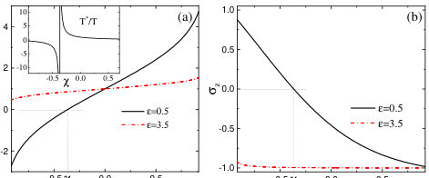
<figcaption class="paper-figure-caption"><b>Fig 1.</b> FIG. 1. Temperature–Hamiltonian ambiguity in the TLS for kBT = ω = 1. The curves correspond to ε = 0.5 and 3.5. For ε = 0.5, the nonsingular ratio β∗/β crosses zero at χc ≃−0.2273, where the reduced TLS is maximally mixed; the pole in T ∗/T is therefore the regular infinite-temperature point. Panel (b) shows the accompanying population inversion.</figcaption>
</figure>
<figure class="paper-figure-card">
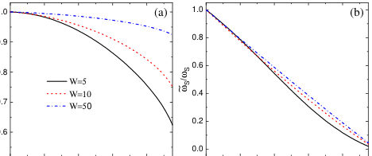
<figcaption class="paper-figure-caption"><b>Fig 2.</b> FIG. 2. Independent Hamiltonian and temperature renormal- izations for the Lorentz–Drude reservoir with kBT = ωS = 1 and W/ωS = 5, 10, 50. The effective temperature T ∗is in- ferred from the stationary occupation after the local excita- tion scale has been fixed, whereas the renormalized frequency eωS is determined by the retarded dynamics. For each band- width the coupling is normalized by the bound-state threshold ηc = 2ωS/(πW); see Supplemental Material [19], Sec. II, for the spectral representation.</figcaption>
</figure>
<figure class="paper-figure-card">
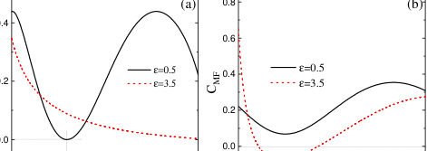
<figcaption class="paper-figure-caption"><b>Fig 3.</b> FIG. 3. Local versus HMF thermodynamic responses for kBT = ω = 1 and ε = 0.5, 3.5. The local heat capacity is a canonical response defined by the independently identified local Hamiltonian and temperature, whereas CMF is an excess response of the interacting composite relative to the bare bath.</figcaption>
</figure>
</div>

<p><strong>Summary.</strong> This paper tackles the temperature–Hamiltonian ambiguity in strongly coupled quantum equilibrium, where the reduced state alone is insufficient to uniquely define the local Hamiltonian and temperature. The authors propose an operational resolution by fixing the local Hamiltonian using physical information independent of the Gibbs assumption. This framework successfully distinguishes state representation from thermodynamic assignment, providing a robust tool for local thermodynamics beyond the weak coupling regime.</p>
<p><strong>Why it may be interesting.</strong> This work provides a rigorous, operational framework for local thermodynamics in strongly coupled open quantum systems, resolving a fundamental ambiguity in defining local equilibrium parameters.</p>
<details>
<summary>Detailed structure</summary>
<p><strong>Main problem.</strong> The paper addresses the temperature–Hamiltonian ambiguity that arises when characterizing a quantum system in strong coupling equilibrium, where the reduced state does not uniquely determine the local Hamiltonian or temperature.</p>
<p><strong>Main result.</strong> An operational framework is proposed where the local Hamiltonian is fixed using physical information independent of the Gibbs parametrization, which then uniquely determines the local temperature if the state is compatible with the Gibbs ensemble.</p>
<p><strong>Method.</strong> The ambiguity is resolved by identifying the local Hamiltonian from physical observables (like retarded dynamics in bosonic models) first, and then using the stationary reduced density matrix to calculate the corresponding effective temperature.</p>
<p><strong>Model / system.</strong> The analysis uses general open quantum systems, explicitly modeling the ambiguity with an exactly solvable two-level-system–oscillator model and a bosonic model (Fano–Anderson type) coupled to a continuum.</p>
<p><strong>Key observables.</strong> Local excitation scale ($\omega_r^S$), effective temperature ($T^*$), local internal energy ($U_S$), and local heat capacity ($C_{	ext{loc}}^S$).</p>
<p><strong>Important parameters / regimes.</strong> Coupling strength ($\chi$ or $V_k$), bath temperature ($T$), and the bare Hamiltonian parameters ($\epsilon, \omega$).</p>
<p><strong>Assumptions / limitations.</strong> The system is assumed to be in a true quantum equilibrium state ($
ho_{    ext{tot}} \propto e^{-eta  ext{H}_{    ext{tot}}}$), and the resolution relies on identifying physical information independent of the Gibbs assumption.</p>
<p><strong>Figures summary.</strong> Figure 2 compares independent Hamiltonian and temperature renormalizations for a Lorentz–Drude reservoir. Figure 3 compares the local heat capacity derived from the local Hamiltonian versus the Mean-Field (HMF) derived quantity.</p>
<p><strong>Paper structure.</strong> The paper first establishes the ambiguity using the general reduced state. It then develops the operational resolution using specific solvable models (TLS and Bosonic) to demonstrate how local dynamics fix the Hamiltonian, which subsequently fixes the temperature.</p>
</details>
<details>
<summary>Abstract</summary>
<p>Strong coupling generally drives a subsystem away from the Gibbs state of its bare Hamiltonian at the bath temperature. We formulate a temperature--Hamiltonian ambiguity: the reduced equilibrium state fixes the dimensionless Gibbs generator, but does not by itself uniquely determine the local Hamiltonian and temperature entering a Gibbs representation. We propose an operational resolution in which the local Hamiltonian is identified from physical information independent of the stationary Gibbs parametrization. Whenever the exact reduced state is compatible with the Gibbs family generated by that independently identified Hamiltonian, it then determines a unique local temperature. An exactly solvable two-level-system--oscillator model makes the ambiguity explicit through state-equivalent descriptions based on temperature renormalization relative to a specified local Hamiltonian and Hamiltonian-of-mean-force level renormalization at the bath temperature. An exact bosonic model provides the complementary case in which retarded dynamics independently fixes a renormalized local excitation scale and thereby specifies the local Hamiltonian before the stationary populations determine the temperature. These results distinguish state representation from thermodynamic assignment and provide an operational framework for local thermodynamics beyond weak coupling.</p>
</details>
<p><sub><a href="#top">↑ back to top</a></sub></p>

<p><a id="paper-2609.34389"></a></p>
<h3 id="experimental-realization-and-phase-space-winding-of-a-topological-defect-state-in-the-quantum-rabi-model"><a href="http://arxiv.org/abs/2609.34389v1">Experimental Realization and Phase-Space Winding of a Topological Defect State in the Quantum Rabi Model</a></h3>
<p><strong>Authors:</strong> Kyungmin Lee, Jiyong Kang, Sunkyu Yu, Jaehun You, Wonhyeong Choi, Taehyun Kim<br>
<strong>Type:</strong> experiment · <strong>Category:</strong> other · <strong>PDF:</strong> <a href="https://arxiv.org/pdf/2609.34389v1">https://arxiv.org/pdf/2609.34389v1</a><br>
<strong>Analysis basis:</strong> full PDF text, analyzed in chunks
<strong>Topic relevance:</strong> <code>QC/QI experiment</code> <strong>3/5</strong> · <code>analog quantum simulation</code> <strong>3/5</strong> · <code>quantum measurements</code> <strong>3/5</strong> · <code>quantum optics experiment</code> <strong>2/5</strong> · <code>Tavis-Cummings &amp; cavity-many-emitter</code> <strong>1/5</strong> · <code>driven-dissipative phase transition</code> <strong>1/5</strong> · <code>methods for driven-dissipative</code> <strong>1/5</strong></p>
<div class="figure-strip-hint">↔ Scroll figures horizontally</div>
<div class="paper-figures-scroll">
<figure class="paper-figure-card">
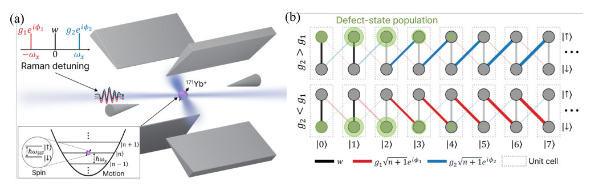
<figcaption class="paper-figure-caption"><b>Fig 1.</b> FIG. 1. Quantum Rabi model in a trapped-ion Fock-state lattice. (a) A three-tone Raman drive couples the internal spin and one motional mode of a single 171Yb+ ion. The carrier sets w, while the red- and blue-sideband tones set g1eiϕ1 and g2eiϕ2 in Eq. (1). (b) Spin–Fock-state lattice generated by these couplings. The upper and lower rows show the regimes g2 &gt; g1 and g1 &gt; g2, respectively. Black vertical links denote the carrier coupling. Red and blue diagonal links denote the two sideband couplings, whose strengths increase with Fock number. Green markers indicate the calculated defect-state population on the |↑⟩or |↓⟩spin sublattice in the respective regimes.</figcaption>
</figure>
<figure class="paper-figure-card">
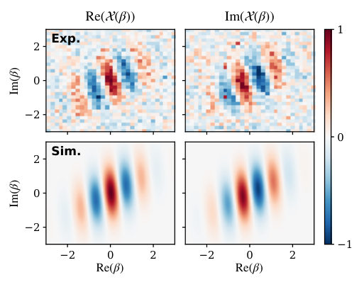
<figcaption class="paper-figure-caption"><b>Fig 2.</b> FIG. 2. Characteristic-function tomography for g1 &gt; g2, rc = 2, rs = 0.25, ϕ1 = −π/3, and ϕ2 = 0. Columns show the real and imaginary parts of X(β). Rows show experiment (Exp.) and the ideal-state calculation (Sim.) from Eq. (2). The conditional motional-state fidelity inferred from their overlap is 0.915 ± 0.013.</figcaption>
</figure>
<figure class="paper-figure-card">
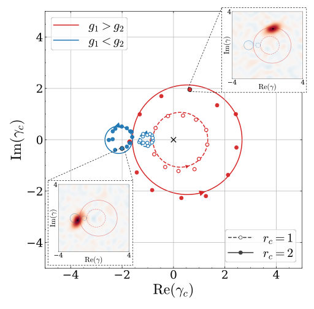
<figcaption class="paper-figure-caption"><b>Fig 3.</b> FIG. 3. Measured phase-space winding for ϕ2 = 0 and rs = 0.25. Open and filled circles show fitted Wigner cen- troids for rc = 1 and 2. Dashed and solid curves are the cor- responding predictions of Eq. (3). Red trajectories (g1 &gt; g2) enclose the origin once, while blue trajectories (g1 &lt; g2) do not. Arrows indicate increasing ϕ1. Insets show selected re- constructed Wigner functions with fitted centroids marked by black dots and the predicted trajectories overlaid.</figcaption>
</figure>
<figure class="paper-figure-card">
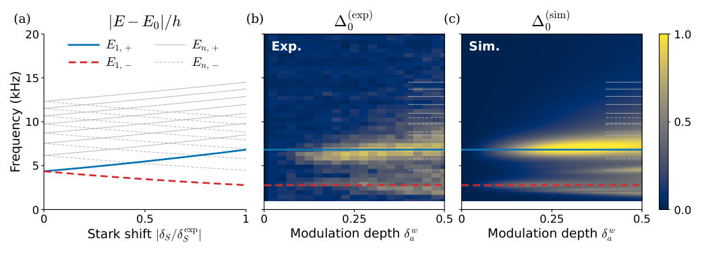
<figcaption class="paper-figure-caption"><b>Fig 4.</b> FIG. 4. Carrier-modulation response of the defect state for g1 &gt; g2, rc = 1, rs = 0.25, and ϕ1,2 = 0. (a) Energy differences |En,± −E0|/h as the Stark shift increases to its experimental value. Blue solid and red dashed curves identify n = 1, and gray curves show higher doublets. (b),(c) Measured and simulated RMS spin response ∆0 versus modulation depth and frequency. The simulation includes the Stark shift and motional heating. Horizontal lines mark the n = 1 gaps at the endpoint of (a). Gray ticks mark higher gaps as spectral references, not additional direct carrier transitions from the defect state. All panels share the frequency scale.</figcaption>
</figure>
<figure class="paper-figure-card">
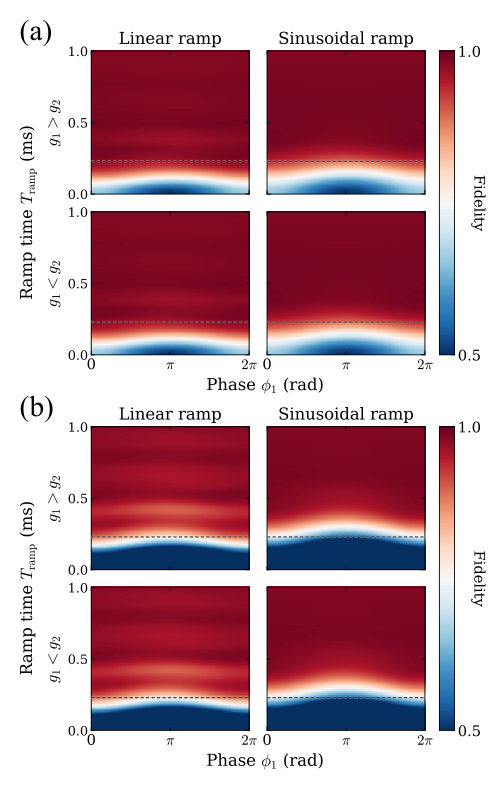
<figcaption class="paper-figure-caption"><b>Fig 5.</b> FIG. 5. Simulated defect-state preparation fidelity for (a) wtarget = gmax and (b) wtarget = 2gmax, versus ramp time and ϕ1, at ϕ2 = 0 and gtarget min /gmax = 0.25. Linear and sinusoidal ramps follow Eq. (B5). Dashed lines mark the inverse ideal- gap scale 229.5 µs. The simulations include the drive-induced Stark shift with maximum magnitude |δS|/(2π) ≃2.23 kHz during the ramp and motional heating calibrated to a ground- state rate of 6 quanta/s.</figcaption>
</figure>
</div>

<p><strong>Summary.</strong> This research experimentally realizes and probes the topological defect state in the Quantum Rabi Model using a single trapped ion. By reconstructing the motional phase-space distribution, the authors measured the winding number of the Wigner-centroid trajectory, confirming its topological nature based on coupling parameters. This connects abstract topological physics to measurable quantum dynamics in trapped-ion systems.</p>
<p><strong>Why it may be interesting.</strong> This work provides a direct, measurable link between abstract topological invariants (winding numbers) and the measurable phase-space geometry of a hybrid spin-boson system realized with trapped ions.</p>
<details>
<summary>Detailed structure</summary>
<p><strong>Main problem.</strong> The paper aims to experimentally realize and characterize the phase-space winding of a topological defect state within the Quantum Rabi Model (QRM).</p>
<p><strong>Main result.</strong> The experiment successfully measured phase-space winding numbers of one and zero, confirming the predicted topological invariant based on the relative strengths of coupling parameters ($g_1$ vs $g_2$).</p>
<p><strong>Method.</strong> The authors used characteristic-function tomography to reconstruct the motional phase-space distribution and analyzed the winding number of the Wigner-centroid trajectory.</p>
<p><strong>Model / system.</strong> The physical system is a single trapped $^{171}	ext{Yb}^+$ ion, which is used to realize the QRM. The system is mapped onto a Fock-state lattice, and the defect state arises from a tunable interface created by number-dependent couplings.</p>
<p><strong>Key observables.</strong> Wigner-centroid trajectories, winding numbers ($W$), and spin response ($\Delta_0$) measured via carrier-amplitude modulation.</p>
<p><strong>Important parameters / regimes.</strong> Coupling ratios ($g_1/g_2$), carrier amplitude modulation depth ($\delta w_a$), and sideband phase settings ($\phi_1, \phi_2$).</p>
<p><strong>Assumptions / limitations.</strong> The analysis relies on the validity of the Fock-state lattice representation and the ability to accurately reconstruct the motional state via tomography.</p>
<p><strong>Figures summary.</strong> Figures illustrate the QRM in an FSL, compare measured vs. simulated characteristic functions, and show reconstructed Wigner functions demonstrating the winding number dependence on coupling regimes.</p>
<p><strong>Paper structure.</strong> The paper details the Hamiltonian formulation, describes the experimental measurement techniques (tomography, modulation), presents the key results showing the winding number dependence, and concludes by connecting the findings to the underlying topological physics.</p>
</details>
<details>
<summary>Abstract</summary>
<p>We experimentally realize a topological defect state of the quantum Rabi model in a single trapped $^{171}\mathrm{Yb}^{+}$ ion. The state is supported by a tunable interface arising from the oscillator's intrinsic number-dependent coupling in the Fock-state-lattice representation. We independently prepare the state at each sideband-phase setting and reconstruct its motional phase-space distribution using characteristic-function tomography. The resulting Wigner-centroid trajectories exhibit winding numbers of one and zero in the two coupling regimes. Changing the carrier amplitude rescales the trajectories while preserving their windings. Carrier-amplitude modulation provides a complementary dynamical probe, yielding a spin response consistent with the excitation gaps and accessible transition channels from the defect state. The experiment connects topological defect-state physics in a nonuniform synthetic lattice to the measurable phase-space geometry of a hybrid spin-boson system.</p>
</details>
<p><sub><a href="#top">↑ back to top</a></sub></p>

<p><a id="paper-2609.32943"></a></p>
<h3 id="the-wiring-sets-a-phase-blind-quantum-memorys-gap-the-weight-caps-its-coherence"><a href="http://arxiv.org/abs/2609.32943v1">The wiring sets a phase-blind quantum memory's gap, the weight caps its coherence</a></h3>
<p><strong>Authors:</strong> Ruini Qian, Zhaobin Lyu, Zelong Yin, Jingjing Hu, Dengfeng Li, Shuoming An<br>
<strong>Type:</strong> theory · <strong>Category:</strong> quantum information and computing · <strong>PDF:</strong> <a href="https://arxiv.org/pdf/2609.32943v1">https://arxiv.org/pdf/2609.32943v1</a><br>
<strong>Analysis basis:</strong> full PDF text, analyzed in chunks
<strong>Topic relevance:</strong> <code>correlated / nonlocal dissipation</code> <strong>3/5</strong> · <code>driven-dissipative phase transition</code> <strong>3/5</strong> · <code>methods for driven-dissipative</code> <strong>3/5</strong> · <code>non-equilibrium universality</code> <strong>2/5</strong> · <code>Keldysh / 2PI / non-Gaussian methods</code> <strong>1/5</strong> · <code>analog quantum simulation</code> <strong>1/5</strong> · <code>quantum measurements</code> <strong>1/5</strong></p>
<div class="figure-strip-hint">↔ Scroll figures horizontally</div>
<div class="paper-figures-scroll">
<figure class="paper-figure-card">
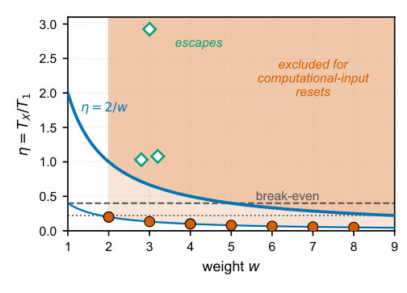
<figcaption class="paper-figure-caption"><b>Fig 1.</b> FIG. 1. The phase-contrast boundary. Horizontal axis, the logical weight w, the number of qubits on which the two code- words differ; vertical axis, η ≡TX/T1, the logical-coherence lifetime in units of the bare damping time T1. For a weight- w coherence sector under resets that take one basis state at a time, independent dephasing and T1 decay, the excluded region, for w ≥2, extends above the lower blue curve, η = T2/(wT1) = 0.4/w, the tighter of the two bounds; the lighter corridor up to the upper curve is the share the de- phasing accounts for. Vermillion markers are the class’s con- trasts at dephasing time Tϕ = 100 µs and damping time T1 = 200 µs: the two-plaquette array and the w = 2...</figcaption>
</figure>
<figure class="paper-figure-card">
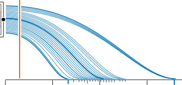
<figcaption class="paper-figure-caption"><b>Fig 2.</b> FIG. 2. The wiring is how the pump matches each error to a code state; it sets the refill time. The noise sets how long the phase lasts. The plaquette at the left carries the check Z1Z2Z3Z4, one qubit on each edge: its sixteen cells are the sixteen states of those four qubits, eight shaded failing the check and eight open passing it, so of the 8! = 40320 ways to match a failing state to a passing one, nearly all refill on a real timescale, the rest returning pairs that the exact computation resolves to one real mode. The ways are drawn as one curve per occupied bin of times, the curve of this work’s wiring the heaviest. The vertical spread is a rendering, not data. The blue arrow spans the...</figcaption>
</figure>
<figure class="paper-figure-card">
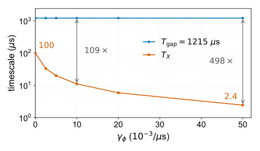
<figcaption class="paper-figure-caption"><b>Fig 3.</b> FIG. 4. The overestimate of the coherence lifetime TX grows with the commuting noise on the same plaquette, at the pump rate κ = 2 MHz and T1 = 200 µs, where the noise is pure σz</figcaption>
</figure>
<figure class="paper-figure-card">
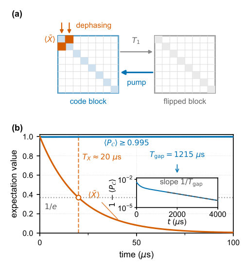
<figcaption class="paper-figure-caption"><b>Fig 4.</b> FIG. 3. How long the code space stays populated is not the logical lifetime on the Z-type plaquette, a four-qubit code with stabilizer Z1Z2Z3Z4 and conjugate logical ¯ X = X1X2X3X4, at pump rate κ = 2 MHz, amplitude-damping time T1 = 200 µs and pure dephasing at Tϕ = 100 µs. (a) The density matrix as a schematic, two sectors. Blue is the code block, where the stabilizer reads +1, grey its −1 counterpart, each block’s populations on the diagonal. The pump cycles population between them, setting the gap time Tgap = 1215 µs of the cyclic wiring this work adopts, the fixed error-to-code assignment; T1 damping leaks it back, and the dephasing contracts the code block’s two ⟨¯ X⟩elements be- side...</figcaption>
</figure>
</div>

<p><strong>Summary.</strong> This work analyzes the decoherence mechanisms in a quantum memory stabilized by engineered dissipation. It demonstrates that the dissipation structure controls the population decay rate (the gap time) but leaves the phase coherence decay rate determined by the underlying bare noise. This reveals that the memory functions on two distinct, decoupled timescales.</p>
<p><strong>Why it may be interesting.</strong> It provides a detailed theoretical understanding of how engineered dissipation can stabilize the population state (gap) independently of the phase coherence, a crucial distinction for building robust quantum memories.</p>
<details>
<summary>Detailed structure</summary>
<p><strong>Main problem.</strong> The paper investigates which physical parameter—the memory's gap time or the stored phase coherence—is determined by the engineered dissipation (the 'wiring') in a quantum memory.</p>
<p><strong>Main result.</strong> The wiring sets the gap time ($    ext{T}<em ext_X="ext{X">{    ext{gap}}$), while the phase coherence ($    ext{T}</em>$) retains its intrinsic decay rate, implying the memory operates on two independent timescales.}</p>
<p><strong>Method.</strong> The analysis uses the Lindblad dissipator formalism to compare the decay rates of the code-space population versus the off-diagonal coherence elements.</p>
<p><strong>Model / system.</strong> The system is a quantum memory modeled on a plaquette structure using engineered dissipation (a 'pump') to stabilize a code space, analyzed via the Liouvillian superoperator.</p>
<p><strong>Key observables.</strong> Gap Time ($    ext{T}<em ext_X="ext{X">{    ext{gap}}$), Phase Coherence Lifetime ($    ext{T}</em>$), Logical Weight ($w$), and the coherence decay rate ($\eta$).}</p>
<p><strong>Important parameters / regimes.</strong> The ratio $\eta = 	ext{T}_{	ext{X}}/	ext{T}_1$, and the weight-dependent bound $\eta \le 2/w$.</p>
<p><strong>Assumptions / limitations.</strong> The analysis assumes the pump jump resets one basis state, and it distinguishes between the population decay sector and the coherence decay sector.</p>
<p><strong>Figures summary.</strong> Figures illustrate the phase-contrast boundary ($\eta$ vs. $w$) showing the coherence bound, and show the decay of population ($\langle P_C 
angle$) remaining high while coherence ($\langle ar{X} 
angle$) decays much faster.</p>
<p><strong>Paper structure.</strong> The paper develops the theoretical framework by analyzing the Liouvillian dynamics, deriving bounds on coherence decay based on weight, and contrasting the resulting gap time (set by the pump) against the coherence lifetime (set by bare noise).</p>
</details>
<details>
<summary>Abstract</summary>
<p>Engineered dissipation corrects errors, yet a memory's phase decays. What the memory's gap measures is not settled. Here we show that when each jump resets one basis state, the wiring can set the gap time while the phase keeps its rate. Under dephasing the gap time spans two orders across wirings; the phase does not. In this class, a contrast on two or more qubits fades faster than a bare qubit at any distance; no such pump power substitutes. The ceiling is two over the qubits the contrast spans. A two-branch pump can escape it at distance three; a two-clock test runs on published data.</p>
</details>
<p><sub><a href="#top">↑ back to top</a></sub></p>

<p><a id="paper-2609.32125"></a></p>
<h3 id="counterdiabatic-quasi-floquet-control-for-the-generation-of-entangled-bics-using-giant-atoms"><a href="http://arxiv.org/abs/2609.32125v1">Counterdiabatic quasi-Floquet control for the generation of entangled BICs using giant atoms</a></h3>
<p><strong>Authors:</strong> Alexis R. Legón, Pedro Orellana, Ariel Norambuena<br>
<strong>Type:</strong> theory · <strong>Category:</strong> other · <strong>PDF:</strong> <a href="https://arxiv.org/pdf/2609.32125v1">https://arxiv.org/pdf/2609.32125v1</a><br>
<strong>Analysis basis:</strong> full PDF text, analyzed in chunks
<strong>Topic relevance:</strong> <code>analog quantum simulation</code> <strong>3/5</strong> · <code>Keldysh / 2PI / non-Gaussian methods</code> <strong>2/5</strong> · <code>driven-dissipative phase transition</code> <strong>2/5</strong> · <code>methods for driven-dissipative</code> <strong>2/5</strong> · <code>Tavis-Cummings &amp; cavity-many-emitter</code> <strong>1/5</strong> · <code>correlated / nonlocal dissipation</code> <strong>1/5</strong> · <code>non-equilibrium universality</code> <strong>1/5</strong> · <code>quantum measurements</code> <strong>1/5</strong></p>
<div class="figure-strip-hint">↔ Scroll figures horizontally</div>
<div class="paper-figures-scroll">
<figure class="paper-figure-card">
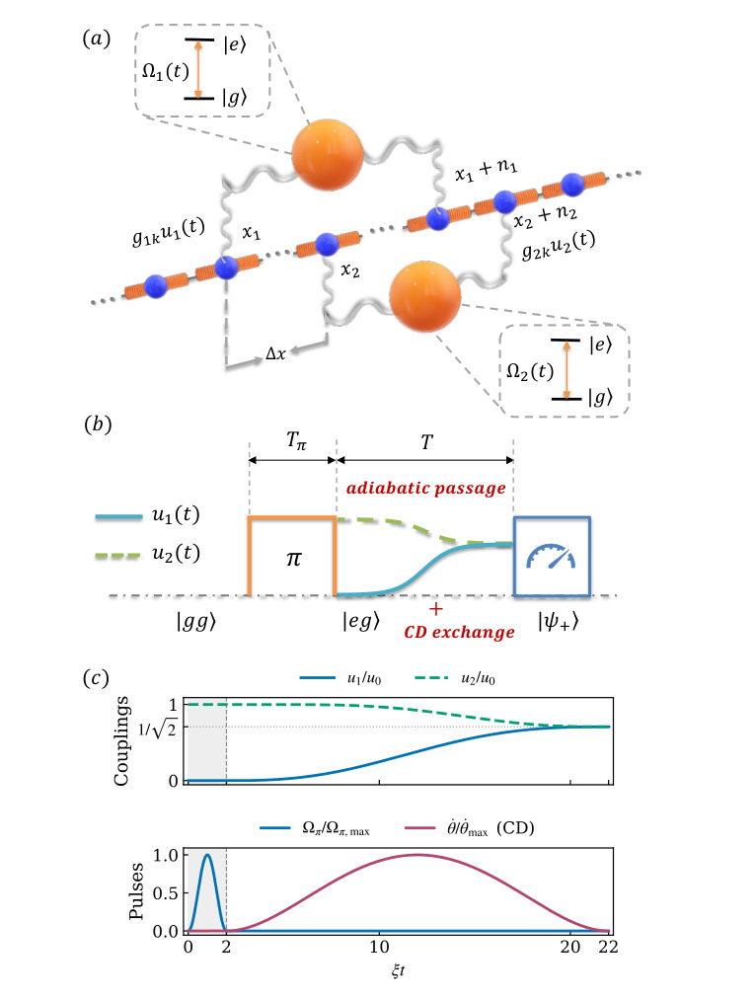
<figcaption class="paper-figure-caption"><b>Fig 1.</b> Figure 1. System and control sequence for generating an entangled BIC. (a) Two giant atoms (orange) coupled to a resonator waveguide (blue) in a braided configuration, with nearest-neighbor hopping ξ. Local quasi-Floquet modulation controls the effective couplings gikui(t), where ui(t) = J0(βi(t)) with βi(t) = εi(t)/ν. An independent phase-controlled atomic exchange Hcd(t), not represented by the local frequency drives in (a), supplies the auxiliary counterdiabatic (CD) control. The numerical protocol uses connections (0, 6) and (2, 8) for giant atoms 1 and 2, respectively. (b) Schematic of the state-preparation protocol. A local π pulse of duration Tπ prepares |eg⟩from the initial state...</figcaption>
</figure>
<figure class="paper-figure-card">
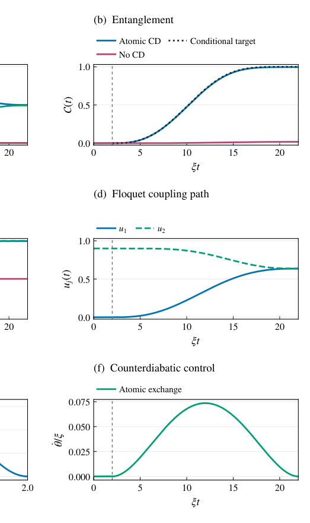
<figcaption class="paper-figure-caption"><b>Fig 2.</b> Figure 2. Two-stage preparation of a Bell-type BIC. (a) Populations during the complete coherent sequence. The curve labeled Pgg,0 is the global-vacuum population |⟨g, g, 0|Ψ(t)⟩|2, and Pγ = P</figcaption>
</figure>
<figure class="paper-figure-card">
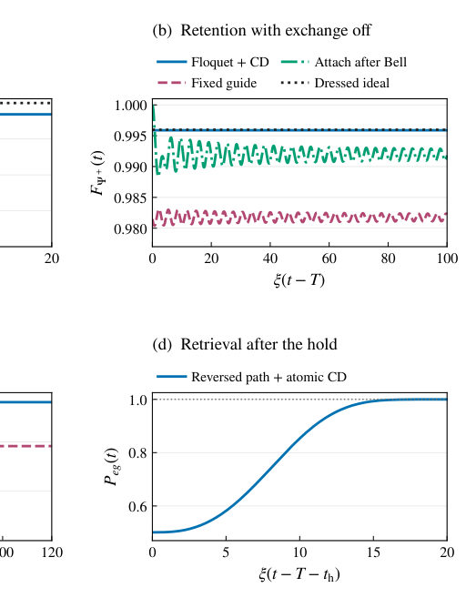
<figcaption class="paper-figure-caption"><b>Fig 3.</b> Figure 3. Dressed-state loading, retention, and retrieval at Nc = 2004, g/ξ = 0.1, u0 = 0.9, and ξT = 20. (a) Fidelity to the full compact BIC, comparing atomic CD with the ideal dressed control. (b) Bell fidelity during a ξth = 100 hold with the exchange off, including fixed-guide and attach-after-Bell references. (c) Total photonic population and population outside sites 0, . . . , 8 for the atomic-CD protocol. (d) Retrieval of the atomic excitation by reversing the coupling path and atomic exchange after the hold. In (a,c), the plotted time t denotes the passage clock τ; the horizontal axes in (b,d) start at the beginning of the hold and retrieval stages, respectively.</figcaption>
</figure>
<figure class="paper-figure-card">
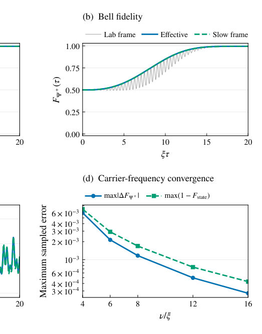
<figcaption class="paper-figure-caption"><b>Fig 4.</b> Figure 4. Microscopic validation of the effective model. (a) Concurrence during the passage, comparing the central-sideband model with microscopic finite-mode dynamics after removal of micromotion. (b) Bell fidelity: the gray curve is the raw laboratory-frame result and the dashed curve is its slow-frame counterpart. Concurrence is invariant under these local phase rotations, whereas fidelity to a fixed Bell ket is not. (c) Pointwise errors |∆FΨ+| and 1 −Fstate at ν/ξ = 8, displayed in units of 10−3. (d) Carrier-frequency convergence of the maximum sampled errors, using 401 output times per frequency. In (a–c), τ is measured from the start of the passage. Parameters are Nc = 2004, g/ξ =...</figcaption>
</figure>
<figure class="paper-figure-card">
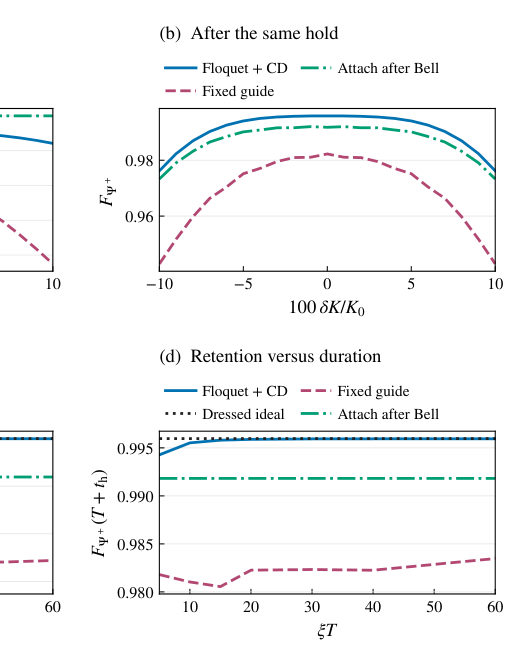
<figcaption class="paper-figure-caption"><b>Fig 5.</b> Figure 5. Controlled comparisons of preparation and retention. (a) Bell fidelity at the end of the passage and (b) after an identical ξth = 100 hold, as functions of wave-vector mismatch. The geometry, bare coupling, initial state, duration ξT = 20, and atomic exchange pulse are matched. Fixed guide uses constant u1 = u2 = u0/ √</figcaption>
</figure>
</div>

<p><strong>Summary.</strong> This paper proposes a quantum control scheme to generate and preserve entangled Bound States in the Continuum (BICs) using two giant atoms coupled to a waveguide. By implementing a combination of quasi-Floquet modulation and counterdiabatic driving, the authors achieve near-perfect fidelity in preparing the entangled state. This demonstrates a powerful method for controlling quantum information storage in engineered photonic environments.</p>
<p><strong>Why it may be interesting.</strong> This work is highly relevant as it combines advanced quantum control theory (Floquet engineering, counterdiabatic driving) with a physical platform (giant atoms/waveguides) known for studying open quantum systems and engineered photonic states.</p>
<details>
<summary>Detailed structure</summary>
<p><strong>Main problem.</strong> The paper addresses the challenge of generating and maintaining high-fidelity entanglement within Bound States in the Continuum (BICs) using giant atoms coupled to a waveguide.</p>
<p><strong>Main result.</strong> A robust protocol combining quasi-Floquet modulation and phase-controlled atomic exchange achieves high-fidelity entanglement, reaching a full-state BIC fidelity of 0.99992 in the lossless limit.</p>
<p><strong>Method.</strong> The approach utilizes quantum control techniques, specifically quasi-Floquet modulation and state-selective counterdiabatic driving, applied to the effective Hamiltonian.</p>
<p><strong>Model / system.</strong> The system consists of two giant atoms coupled to a one-dimensional coupled-resonator waveguide. The dynamics are modeled using an effective slow-frame Hamiltonian derived from the full time-dependent Hamiltonian.</p>
<p><strong>Key observables.</strong> Full-state BIC fidelity (0.99992), unconditional atomic Bell fidelity (0.99588), Concurrence, and state-selective tracking residuals.</p>
<p><strong>Important parameters / regimes.</strong> The control is governed by modulation envelopes $eta_i(t)$ and the coupling strengths $g_{ik}$, with performance quantified under specific control tolerances.</p>
<p><strong>Assumptions / limitations.</strong> The analysis relies on the central sideband approximation, and the derivation of the counterdiabatic Hamiltonian requires assumptions about the initial state and the nature of the control fields.</p>
<p><strong>Figures summary.</strong> Figure 1 illustrates the physical system, the state-preparation protocol (involving a $\pi$-pulse and CD exchange), and the temporal control sequence applied to the system.</p>
<p><strong>Paper structure.</strong> The paper develops the effective Hamiltonian, derives the necessary counterdiabatic control Hamiltonian, outlines a two-stage preparation protocol (including $\pi$-pulse and coupling variation), and validates the results using both lossless and dissipative simulations.</p>
</details>
<details>
<summary>Abstract</summary>
<p>Bound states in the continuum (BICs) provide a mechanism for preserving entanglement in waveguide quantum electrodynamics. Here, using quantum control techniques in a configuration of two braided giant atoms, we propose a robust approach to create high-fidelity entangled BICs. The protocol combines quasi-Floquet modulation of the effective atom--waveguide couplings with an independent phase-controlled atomic exchange, which provides restricted counterdiabatic assistance for preparing the complete dressed BIC. In the lossless effective model, we obtain a full-state BIC fidelity of $0.99992$ and an unconditional atomic Bell fidelity of $0.99588$ using a fast control protocol. Microscopic finite-mode simulations validate the central-sideband description during the passage, while static calibration-error scans quantify its control tolerances. A separate microscopic study with relaxation and dephasing, using experimentally motivated component scales, identifies a finite useful entanglement window and a benefit from shaping the coupling envelopes. These results support controlled preparation, retention, and retrieval of dressed entanglement within the stated control and noise assumptions.</p>
</details>
<p><sub><a href="#top">↑ back to top</a></sub></p>

<p><a id="paper-2609.32845"></a></p>
<h3 id="generation-of-arbitrary-quantum-states-in-cavity-atom-systems-with-a-three-level-ancilla"><a href="http://arxiv.org/abs/2609.32845v1">Generation of arbitrary quantum states in cavity-atom systems with a three-level ancilla</a></h3>
<p><strong>Authors:</strong> Da-Wei Luo, Ting Yu<br>
<strong>Type:</strong> theory · <strong>Category:</strong> other · <strong>PDF:</strong> <a href="https://arxiv.org/pdf/2609.32845v1">https://arxiv.org/pdf/2609.32845v1</a><br>
<strong>Analysis basis:</strong> full PDF text, analyzed in chunks
<strong>Topic relevance:</strong> <code>Tavis-Cummings &amp; cavity-many-emitter</code> <strong>3/5</strong> · <code>analog quantum simulation</code> <strong>3/5</strong> · <code>driven-dissipative phase transition</code> <strong>2/5</strong> · <code>methods for driven-dissipative</code> <strong>2/5</strong> · <code>quantum measurements</code> <strong>2/5</strong> · <code>Keldysh / 2PI / non-Gaussian methods</code> <strong>1/5</strong></p>
<div class="figure-strip-hint">↔ Scroll figures horizontally</div>
<div class="paper-figures-scroll">
<figure class="paper-figure-card">
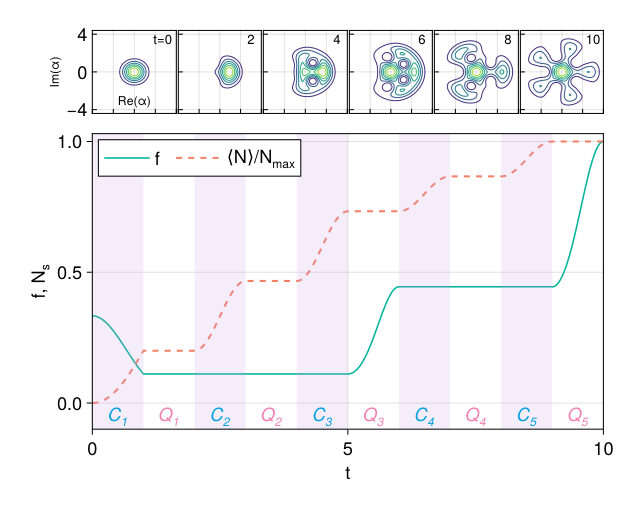
<figcaption class="paper-figure-caption"><b>Fig 1.</b> Figure 2. Fidelity (green solid line) and scaled excitation (coral dashed line) Ns = ⟨N⟩/Nmax dynamics, with snapshots of the Husimi Q functions at the end of each C-Q cycle. Due to the design of this protocol and the target state considered here, the fidelity first backtracks then moves towards the target f = 1 at the end of the runtime, while the number of excitations are kept constant in each Q step and rises steadily in each C step.</figcaption>
</figure>
<figure class="paper-figure-card">
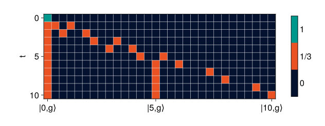
<figcaption class="paper-figure-caption"><b>Fig 2.</b> Figure 3. Wave function vector element |cn,i|2 at the end of each control step: y axis is the evolution time, and the basis is arranged as dressed states in the order specified in Fig. 1 for the x axis.</figcaption>
</figure>
<figure class="paper-figure-card">
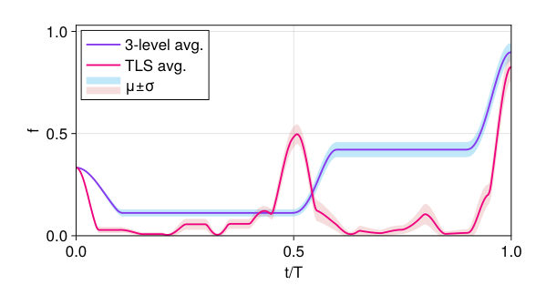
<figcaption class="paper-figure-caption"><b>Fig 3.</b> Figure 4. Fidelity dynamics after introducing 8% error in both the timing and amplitude of the control fields, 10, 000 random samples, at a rescaled time t/T where T is the total runtime for using a TLS and a three-level atom as the ancilla. Since 3-level ancilla can reduce the number of steps needed to generate the same target state, it accumulates less error and achieve a higher final fidelity f ≈0.90 compared to f ≈0.83 for the TLS. Shaded area indicates the error spread of the fidelity dynamics for the random samples as indicated by µ ± σ, where µ, σ is the mean and standard deviation of the samples at each time point respectively. It can be seen that the three level case has less error...</figcaption>
</figure>
<figure class="paper-figure-card">
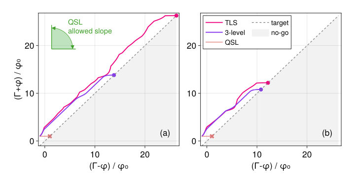
<figcaption class="paper-figure-caption"><b>Fig 4.</b> Figure 5. QSL comparison for protocols using three- ane two-level atoms as ancilla. Since φ ≥0, the grey shared area is the no-go zone, and horizontal movements of the trajectory signifies the saturation of QSL. State starts at (−1, 1) and target is reached when it reaches the dashed y = x line. QSL limits the slope of the lines to be non-negative, where horizontal movement means the system is moving towards the target at QSL. Panel (a): the composite atom+cavity system, (b): the reduced cavity state as a non-unitary evolution process. Purple (magenta, orange) lines represents the three-level (TLS, ideal QSL geodesic) dynamics, with circle (cross) markers to signify the target is reached....</figcaption>
</figure>
<figure class="paper-figure-card">
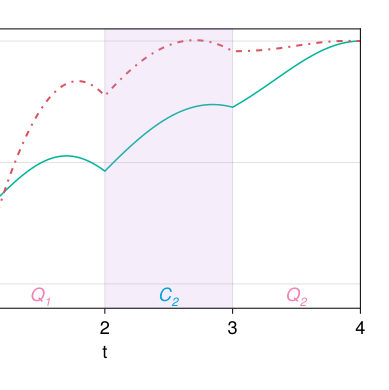
<figcaption class="paper-figure-caption"><b>Fig 5.</b> Figure 6. Generation of a sample entangled atom-cavity target state in 2 steps. Green solid line is the fidelity dynamics, and the red dot-dashed line represents the entanglement dynamics with a scaled log-negativity Es = E/ET where ET is the target state entanglement.</figcaption>
</figure>
</div>

<p><strong>Summary.</strong> This paper proposes an improved protocol for generating arbitrary quantum states in cavity-atom systems by utilizing a three-level atomic ancilla. The key improvement is that the protocol achieves the state preparation in half the number of steps compared to previous two-level system methods. The authors provide full analytical derivations and analyze robustness using fidelity and the Quantum Speed Limit.</p>
<p><strong>Why it may be interesting.</strong> This work directly addresses quantum control in cavity QED, a core area of AMO physics. The efficiency gain by using a higher-dimensional ancilla (qutrit) is a significant theoretical advancement for quantum state preparation.</p>
<details>
<summary>Detailed structure</summary>
<p><strong>Main problem.</strong> The primary goal is to develop a more efficient protocol for generating arbitrary quantum states in cavity-atom systems compared to existing methods.</p>
<p><strong>Main result.</strong> The use of a three-level ancilla allows for a protocol that reduces the number of required evolution steps by a factor of two compared to using a two-level system.</p>
<p><strong>Method.</strong> The protocol is derived by constructing the unitary evolution propagator $U$ through alternating classical ($C$) and quantized ($Q$) field steps, working backward in time to map the target state to the initial state.</p>
<p><strong>Model / system.</strong> The system involves a $\Delta$-type three-level atom (ancilla) coupled to an optical cavity. The dynamics are governed by a Hamiltonian $H(j) = H_C(j) + H_Q(j)$ in the interaction picture.</p>
<p><strong>Key observables.</strong> Fidelity ($f$), Entanglement (Logarithmic Negativity $E$), and the Quantum Speed Limit (QSL) parameters ($\Gamma$ and $\dot{\Gamma}$).</p>
<p><strong>Important parameters / regimes.</strong> The efficiency is quantified by the reduction in the number of evolution steps and the comparison of fidelity/QSL metrics against the two-level ancilla case.</p>
<p><strong>Assumptions / limitations.</strong> The protocol assumes the ability to analytically derive control field strengths and timings, and the analysis considers error accumulation due to timing and amplitude variations.</p>
<p><strong>Figures summary.</strong> Figures illustrate the state preparation protocol using $Q^\dagger$ and $C^\dagger$ steps, compare fidelity dynamics under error for three-level vs. TLS ancillas, and show the QSL comparison between the two ancilla types.</p>
<p><strong>Paper structure.</strong> The paper generalizes previous work by incorporating a three-level ancilla, deriving the full unitary propagator, detailing the backward evolution steps, and analyzing performance metrics like fidelity, entanglement, and QSL.</p>
</details>
<details>
<summary>Abstract</summary>
<p>We generalized the seminal work of Law &amp; Eberly, and propose a protocol to generate arbitrary quantum states with a three-level atom as an ancilla in a more efficient manner. This protocol moves two excitations in parallel in each control step, thus reducing the number of evolution steps by half. Full analytical expressions for the control field strengths and timings are derived. The system dynamics is exposed to less chance of error accumulation in the timing and amplitudes of the control fields, and quantitative study in the context of the quantum speed limit is also considered.</p>
</details>
<p><sub><a href="#top">↑ back to top</a></sub></p>

<p><a id="paper-2609.32871"></a></p>
<h3 id="mpemba-effect-without-a-wall"><a href="http://arxiv.org/abs/2609.32871v1">Mpemba effect without a wall</a></h3>
<p><strong>Authors:</strong> Siddharth S. Sane, John Bechhoefer<br>
<strong>Type:</strong> theory · <strong>Category:</strong> statistical mechanics · <strong>PDF:</strong> <a href="https://arxiv.org/pdf/2609.32871v1">https://arxiv.org/pdf/2609.32871v1</a><br>
<strong>Analysis basis:</strong> full PDF text, analyzed in chunks
<strong>Topic relevance:</strong> <code>non-equilibrium universality</code> <strong>3/5</strong> · <code>Keldysh / 2PI / non-Gaussian methods</code> <strong>2/5</strong> · <code>methods for driven-dissipative</code> <strong>2/5</strong> · <code>Frenkel-Kontorova</code> <strong>1/5</strong> · <code>analog quantum simulation</code> <strong>1/5</strong> · <code>correlated / nonlocal dissipation</code> <strong>1/5</strong> · <code>driven-dissipative phase transition</code> <strong>1/5</strong> · <code>quantum measurements</code> <strong>1/5</strong> · <code>scars &amp; prethermalization</code> <strong>1/5</strong></p>
<div class="figure-strip-hint">↔ Scroll figures horizontally</div>
<div class="paper-figures-scroll">
<figure class="paper-figure-card">
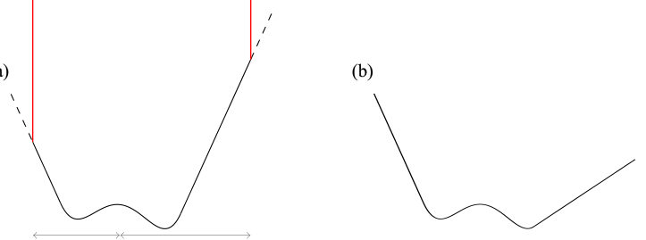
<figcaption class="paper-figure-caption"><b>Fig 1.</b> Figure 1. Potentials showing a Mpemba effect. (a) Kumar-Bechhoefer potentials [13]. The potential used for the Boltzmann distribution at T0 has vertical walls (red) at xmin and xmax, whereas the potential used for the evolution in the bath has no walls and extends beyond (dashed lines). (b) The potential used here has no walls. The different colors used in the potentials denote regions where the function is analytic; at color changes, either the first or second derivative is discontinuous. The central portion of the potentials U0(x) is a tilted double-well potential with energy barrier Eb and energy difference ∆E between wells.</figcaption>
</figure>
<figure class="paper-figure-card">
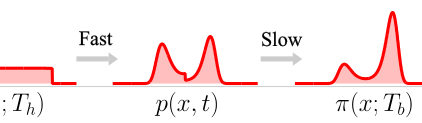
<figcaption class="paper-figure-caption"><b>Fig 2.</b> Figure 2. Mpemba scenario from reference [13]. (a) Potential U(x) showing central tilted double-well portion U0(x) in black, constant force Fmax in red. Vertical walls are imposed for the initial condition, whereas the particle moves in the potential where ±Fmax is applied to all x. (b) Crossing of distance curves indicates the Mpemba effect. (c) Projection coefficient a2 as a function of initial temperature T0. The decrease in |a2| in T0 ∈(3, 100) indicates the Mpemba effect. The zero crossing at T0 = T ∗ h indicates the strong Mpemba effect. (d) Illustration of the two-stage relaxation mechanism. The initial condition (left) is a Boltzmann distribution for T0 = 1000Tb and is nearly a...</figcaption>
</figure>
<figure class="paper-figure-card">
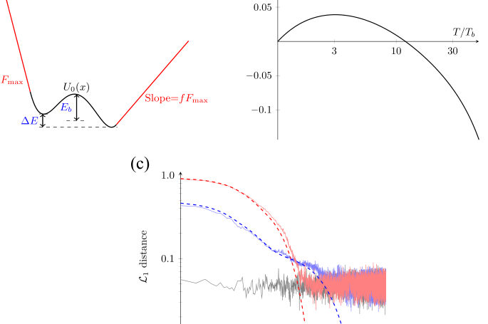
<figcaption class="paper-figure-caption"><b>Fig 3.</b> Figure 3. Mpemba effects in a potential with no box. (a) Form of the potential, with colored segments showing the piecewise analytic sections, with the tilted double-well segment U0(x) in black and with the linear slopes in red. (b) The coefficient a2(T) for the potential crosses the T-axis at T0 = Tb and ≈12 Tb. (c) Simulations of the experiment with N = 5000 Langevin integrations, Th = 12 Tb (red), and Tw = 3 Tb (blue). The crossing is visible above the noise floor. Solutions to the FPE are overlaid in dashed lines. (d) Experimental data with the same parameters as the simulation.</figcaption>
</figure>
<figure class="paper-figure-card">
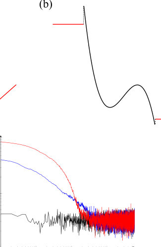
<figcaption class="paper-figure-caption"><b>Fig 4.</b> Figure 4. A bent potential can also display the Mpemba effect. (a) The bent potential has slopes that are discontinuous at the transition from red to black lines. (b) Force field has corresponding jump discontinuities. (c) Crossing of distance curves indicates the Mpemba effect.</figcaption>
</figure>
<figure class="paper-figure-card">
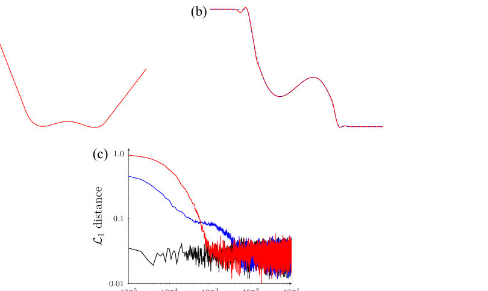
<figcaption class="paper-figure-caption"><b>Fig 5.</b> Figure 5. Fully analytic potentials on R can display the Mpemba effect. (a) Analytic approximations to the potential equation 11, as outlined in equation 19b. (b) The force profile, F(x) = −U ′ a(x). In (a) and (b), the solid red lines denote the analytic potential Ua(x) and the dashed blue lines the piecewise potential U(x). (c) Relaxation dynamics for a Langevin simulation with the analytic potential Ua(x).</figcaption>
</figure>
</div>

<p><strong>Summary.</strong> This paper re-examines the Mpemba effect by developing a theoretical model using a potential that lacks physical boundaries. The authors demonstrate that the effect can occur without walls, provided the temperature quench rate is faster than a specific critical rate. This clarifies previous misconceptions regarding the necessity of boundaries in such non-equilibrium thermal processes.</p>
<p><strong>Why it may be interesting.</strong> The work connects non-equilibrium thermodynamics (Mpemba effect) to the mathematical necessity of boundary conditions in physical models, which is relevant for understanding relaxation in confined or structured quantum systems.</p>
<details>
<summary>Detailed structure</summary>
<p><strong>Main problem.</strong> The paper investigates the necessary conditions for the Mpemba effect, specifically addressing whether physical boundaries or 'walls' are required for this anomalous cooling phenomenon to occur.</p>
<p><strong>Main result.</strong> The Mpemba effect was shown to occur in a system modeled with a potential that lacks walls, and its existence was found to be contingent upon the quench rate being faster than a critical quench rate.</p>
<p><strong>Method.</strong> The analysis uses the Fokker-Planck equation framework to study the relaxation of the probability density function after a quench from an initial high temperature ($T_0$) to a lower bath temperature ($T_b$).</p>
<p><strong>Model / system.</strong> The system is modeled as a colloidal-particle system undergoing overdamped Langevin dynamics in one dimension. The core development involves introducing a new, wall-free potential that governs both the initial high-temperature state and the subsequent evolution.</p>
<p><strong>Key observables.</strong> The primary diagnostic is the coefficient $a_2$ derived from the relaxation of the probability density function, where a decrease in $|a_2|$ with increasing $T_0$ signals the Mpemba effect.</p>
<p><strong>Important parameters / regimes.</strong> The quench rate ($\Lambda$) relative to a critical quench rate ($\Lambda^*$) is crucial; the effect is only observed when the quench is fast enough.</p>
<p><strong>Assumptions / limitations.</strong> The authors assume the validity of the overdamped Langevin description and focus on the relaxation dynamics governed by the second non-equilibrium mode ($\lambda_2$).</p>
<p><strong>Figures summary.</strong> The figures illustrate the comparison between potentials with walls (previous work) and the new, wall-free potential used in the current investigation, demonstrating the effect's persistence without boundaries.</p>
<p><strong>Paper structure.</strong> The paper first reviews the limitations of previous work that used different potentials for initial and final states. It then introduces the wall-free potential and uses it to simulate the Mpemba effect, culminating in the finding that a critical quench rate must be exceeded for the effect to manifest.</p>
</details>
<details>
<summary>Abstract</summary>
<p>Experimental demonstrations of the Mpemba effect in a colloidal-particle system have imposed an instantaneous temperature quench via an initial condition where individual particle trajectories are drawn from a high-temperature Boltzmann distribution and then evolve in a bath at lower temperature. The potential used for the high-temperature distribution has had two walls that impose a finite range of initial positions, even at effectively infinite temperatures. The potential for evolution in the bath had no walls and matched that used for the initial condition over its support. For low bath temperatures, the difference between the dynamics with and without walls is negligible. Nonetheless, it has been speculated that the walls are perhaps more important than they seem and might even be required for the Mpemba effect to occur. Here, we introduce a new potential that lacks walls and use it for both the initial high temperature state and for subsequent evolution. This new potential then allows us to investigate by simulation Mpemba effects at finite-quench rates. Our results help clarify intuitions concerning the existence of a Mpemba effect and show that the Mpemba effect appears only for bath-temperature quenches faster than a critical quench rate.</p>
</details>
<p><sub><a href="#top">↑ back to top</a></sub></p>

<p><a id="paper-2609.33751"></a></p>
<h3 id="non-stationary-statistics-and-energetics-of-brownian-motion-under-stochastic-harmonic-confinement"><a href="http://arxiv.org/abs/2609.33751v1">Non-stationary Statistics and Energetics of Brownian Motion under Stochastic Harmonic Confinement</a></h3>
<p><strong>Authors:</strong> Deepak Gupta, Sabine H. L. Klapp<br>
<strong>Type:</strong> theory · <strong>Category:</strong> statistical mechanics · <strong>PDF:</strong> <a href="https://arxiv.org/pdf/2609.33751v1">https://arxiv.org/pdf/2609.33751v1</a><br>
<strong>Analysis basis:</strong> full PDF text, analyzed in chunks
<strong>Topic relevance:</strong> <code>Keldysh / 2PI / non-Gaussian methods</code> <strong>3/5</strong> · <code>methods for driven-dissipative</code> <strong>3/5</strong> · <code>non-equilibrium universality</code> <strong>3/5</strong> · <code>correlated / nonlocal dissipation</code> <strong>1/5</strong> · <code>driven-dissipative phase transition</code> <strong>1/5</strong> · <code>quantum measurements</code> <strong>1/5</strong> · <code>scars &amp; prethermalization</code> <strong>1/5</strong></p>
<div class="figure-strip-hint">↔ Scroll figures horizontally</div>
<div class="paper-figures-scroll">
<figure class="paper-figure-card">
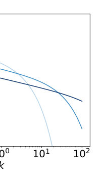
<figcaption class="paper-figure-caption"><b>Fig 1.</b> Figure 1. Probability density function p(k,t) (6) as a function of stiffness for different times t.</figcaption>
</figure>
<figure class="paper-figure-card">
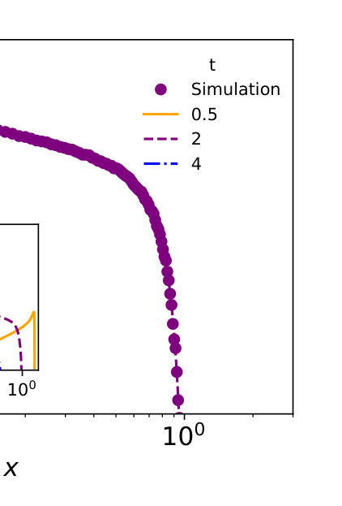
<figcaption class="paper-figure-caption"><b>Fig 2.</b> Figure 2. Comparison of the analytical probability density function (25) with the data obtained from the numerical simulations (17) in the absence of thermal fluctuations at time t = 2. Lines: Analytical result [by summing 103 terms in the summation (25)]. Circles: Numerical simulations performed using the time discretization dt = 10−3, and number of realizations 106. The other fixed parameters are strength of the static stiffness σ0 = 0.5, random stiffness σ = 3, the initial position x0 = 3, and the time t = 2. Inset: Analytical results for t = 0.5,2,4.</figcaption>
</figure>
<figure class="paper-figure-card">
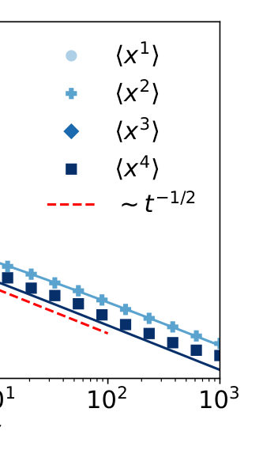
<figcaption class="paper-figure-caption"><b>Fig 3.</b> Figure 3. Comparison of analytical (lines) and numerical simulations data (symbols) of first four positional moments as a functions of time t. Analytical results: Eqs. (36b), (40), (61), (64). Numerical simulations were performed for time discretization dt = 10−5</figcaption>
</figure>
<figure class="paper-figure-card">
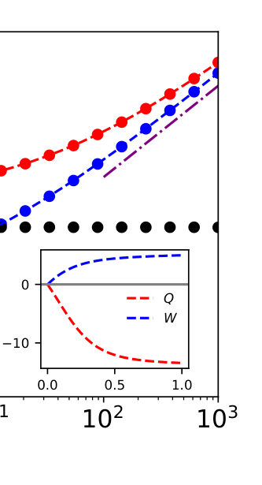
<figcaption class="paper-figure-caption"><b>Fig 4.</b> Figure 4. Average work W (blue), average heat dissipated in the bath −Q (red), and the negative change in the average internal energy −∆U (black), each as a function of time t. Symbols: Numerical simulations. Dashed lines: Analytical results (79) and (82). The parameters are σ0 = 2, σ = 5, and x0 = 3. For numerical simulations, we take dt = 10−5 and number of realizations 105. Inset: Analytical results for W and Q.</figcaption>
</figure>
</div>

<p><strong>Summary.</strong> This work analyzes the statistical mechanics of a Brownian particle confined in a harmonic trap with a stochastically fluctuating stiffness. The authors demonstrate that this system exhibits non-stationary behavior, calculating positional moments, average work, and heat exchange. The results confirm the non-stationary nature through non-linear time scaling of energy dissipation, providing insights into non-equilibrium thermodynamics.</p>
<p><strong>Why it may be interesting.</strong> The study provides a rigorous theoretical framework for analyzing non-equilibrium dynamics in systems driven by colored or stochastic noise, which is highly relevant for understanding energy dissipation and fluctuation theorems in complex physical systems.</p>
<details>
<summary>Detailed structure</summary>
<p><strong>Main problem.</strong> The paper investigates the positional statistics and thermodynamic properties of a Brownian particle confined in a harmonic trap whose stiffness fluctuates stochastically.</p>
<p><strong>Main result.</strong> The process is fundamentally non-stationary, leading to non-linear growth in average work and heat exchange over time, while the internal energy change reaches a stationary limit.</p>
<p><strong>Method.</strong> The authors employed the Feynman-Kac formalism, solving moment generating functions via Gaussian ansatze, and applying the method of subordination to analyze the Fokker-Planck equation.</p>
<p><strong>Model / system.</strong> The system is a Brownian particle in a harmonic trap where the stiffness fluctuates according to $k(t) = a^2(t)$, where $a(t)$ itself follows a stochastic process. This model is non-stationary because the stiffness fluctuations do not approach a steady state.</p>
<p><strong>Key observables.</strong> Positional moments ($\langle x^n 
angle$), average work performed ($W$), and average heat exchanged ($Q$).</p>
<p><strong>Important parameters / regimes.</strong> Time ($t$), initial position ($x_0$), and the static stiffness component ($\sigma_0$). The analysis covers both zero temperature ($T=0$) and finite temperature ($T 
eq 0$) regimes.</p>
<p><strong>Assumptions / limitations.</strong> The stiffness is modeled as $k(t) = a^2(t)$ to ensure it remains strictly non-negative, avoiding unphysical negative stiffness values encountered in previous models.</p>
<p><strong>Figures summary.</strong> Figure 4 compares analytical predictions to numerical simulations for the average work ($W$), heat ($Q$), and internal energy change ($\Delta U$), showing non-linear scaling confirming non-stationarity.</p>
<p><strong>Paper structure.</strong> The paper first establishes the stochastic dynamics and calculates positional moments using moment generating functions. It then extends the analysis to compute the average work and heat exchanged, demonstrating the non-stationary long-time behavior of these thermodynamic quantities.</p>
</details>
<details>
<summary>Abstract</summary>
<p>We investigate the positional statistics and thermodynamic properties of a Brownian particle confined in a Harmonic trap. The stiffness of the particle fluctuates in time as the square of the Brownian process. First, in the absence of a thermal bath, we investigate the probability density function of the position of the particle at time $t$. Then, we provide an expression to compute the $n$th positional moment. We evaluate the first four positional moments and discuss their asymptotic behavior in the long-time limit. In contrast to previously studied models of fluctuating stiffness, the current model describes a non-stationary process. Furthermore, we provide the exact expression for the average work performed on the system and the average heat exchanged by the particle with the bath. Their long time behavior again reflects the non-stationary nature of the process. Our theoretical predictions are supported by numerical simulations.</p>
</details>
<p><sub><a href="#top">↑ back to top</a></sub></p>

<p><a id="paper-2609.32080"></a></p>
<h3 id="odd-stochastic-density-functional-theory"><a href="http://arxiv.org/abs/2609.32080v1">Odd stochastic density functional theory</a></h3>
<p><strong>Authors:</strong> Yael Avni, Michel Fruchart, David Martin, Tali Khain, Vincenzo Vitelli<br>
<strong>Type:</strong> theory · <strong>Category:</strong> statistical mechanics · <strong>PDF:</strong> <a href="https://arxiv.org/pdf/2609.32080v1">https://arxiv.org/pdf/2609.32080v1</a><br>
<strong>Analysis basis:</strong> full PDF text, analyzed in chunks
<strong>Topic relevance:</strong> <code>Keldysh / 2PI / non-Gaussian methods</code> <strong>3/5</strong> · <code>correlated / nonlocal dissipation</code> <strong>2/5</strong> · <code>driven-dissipative phase transition</code> <strong>2/5</strong> · <code>methods for driven-dissipative</code> <strong>2/5</strong> · <code>non-equilibrium universality</code> <strong>2/5</strong> · <code>analog quantum simulation</code> <strong>1/5</strong> · <code>quantum measurements</code> <strong>1/5</strong></p>
<div class="figure-strip-hint">↔ Scroll figures horizontally</div>
<div class="paper-figures-scroll">
<figure class="paper-figure-card">
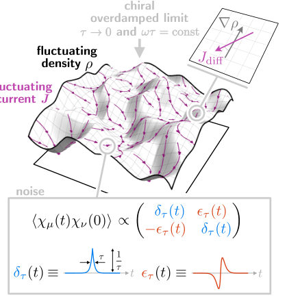
<figcaption class="paper-figure-caption"><b>Fig 1.</b> Fig. 1. Odd stochastic density functional theory. Chi- ral systems ranging from magnetized electrolytes (panel A) to chiral chemoactive colloids (panel B) can exhibit a chiral noise due to their coupling with the environment. These systems can be described by odd SDFT in the chiral overdamped limit where the correlation decay time τ of the noise vanishes with the same rate as the oscillation frequency of the chiral noise ω diverges. Odd SDFT (panel C) describes the evolution of a fluctuating density field ρ, which is redistributed by a fluctu- ating current J. The deterministic part of this current con- tains a diffusive part Jdiff proportional to a rotated ∇ρ (plus drift currents), while...</figcaption>
</figure>
<figure class="paper-figure-card">
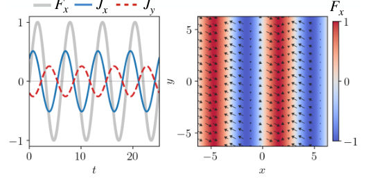
<figcaption class="paper-figure-caption"><b>Fig 2.</b> Fig. 2. Collective linear response to a spatiotemporal force from odd SDFT. We apply a spatiotemporal force F = sin(k0x + ω0t)ˆx and compute the resulting average cur- rent ⟨J⟩. Left: Fx (thick gray), Jx (full blue), and Jy (dashed red) at the origin as a function of time. Right: ⟨J(x, y)⟩at t = 0 (arrows), with colormap of Fx(x, t = 0). The cur- rents are calculated from inverse Fourier transform of Eqs. 10 and 12. Parameters: ε = 0.5, kBT = c = γ = 1, ε = 0.5, k0 = ω0 = 1, and ˜V (k0) = 0.5.</figcaption>
</figure>
<figure class="paper-figure-card">
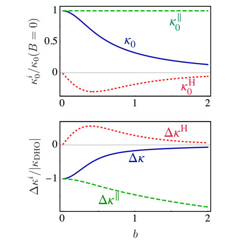
<figcaption class="paper-figure-caption"><b>Fig 3.</b> Fig. 3. Hall conductance of dilute electrolytes from odd SDFT. The three independent components of the con- ductivity tensor, Kxx, Kxy, and Kzz, shown as a function of b = 2qB/(γ+ + γ−), with fixed 2γ+/(γ+ + γ−) = 3/2. Top: the mean-field conductivity valid in the infinite dilution limit normalized by κ0(B = 0) = q2c(γ−1 + + γ−1 −). Bottom: low- est order correction at higher concentrations normalized by |∆κDHO| = √</figcaption>
</figure>
</div>

<p><strong>Summary.</strong> This paper introduces 'odd Stochastic Density Functional Theory' (odd SDFT) to model complex, chiral many-body systems like magnetized electrolytes. It extends standard SDFT by deriving a new formulation applicable when relaxation and oscillation periods vanish simultaneously. The theory successfully calculates the full, asymmetric conductivity tensor, providing a systematic tool for studying odd transport phenomena beyond mean-field approximations.</p>
<p><strong>Why it may be interesting.</strong> While focused on classical statistical mechanics, the development of a generalized, non-equilibrium response theory (odd SDFT) that handles non-Hermitian or chiral couplings is highly relevant to open quantum systems and non-Markovian dynamics in quantum optics.</p>
<details>
<summary>Detailed structure</summary>
<p><strong>Main problem.</strong> The paper extends Stochastic Density Functional Theory (SDFT) to model systems exhibiting chirality, specifically addressing the 'chiral overdamped limit' where both relaxation time and oscillation period vanish.</p>
<p><strong>Main result.</strong> The authors derive 'odd SDFT,' a framework that systematically computes odd (or Hall) response functions and transport coefficients, extending classical theories like Debye-Hückel-Onsager to finite magnetic fields.</p>
<p><strong>Method.</strong> The theory is derived by taking the overdamped limit of a fluctuating hydrodynamic description of underdamped particles subject to a Lorentz force, utilizing linear response theory and Green-Kubo relations.</p>
<p><strong>Model / system.</strong> The theory applies to general chiral systems, including magnetized electrolytes and chiral active matter. The underlying dynamics are modeled via fluctuating Langevin equations incorporating a Lorentz force and chiral noise.</p>
<p><strong>Key observables.</strong> Hall conductivity tensor ($\mathbf{K}$), collective mobility tensor ($\mathbf{L}$), and the full conductivity tensor components ($\kappa_0, \kappa_H, \kappa_\parallel$).</p>
<p><strong>Important parameters / regimes.</strong> Magnetic field strength ($B$), correlation time ($  au$), and the characteristic frequency ($\omega$) defining the chiral noise regime.</p>
<p><strong>Assumptions / limitations.</strong> The derivation involves adiabatically eliminating the momentum field in the low-mass limit, and the standard SDFT formulation assumes white noise, which is insufficient for magnetized electrolytes.</p>
<p><strong>Figures summary.</strong> Figure 2 illustrates the collective linear response to a spatiotemporal force, showing the development of a transverse current. Figure 3 shows the calculated Hall conductance components as a function of a magnetic field parameter.</p>
<p><strong>Paper structure.</strong> The paper introduces the odd SDFT framework by deriving it from the overdamped limit of fluctuating hydrodynamics. It then establishes its utility by calculating the collective mobility tensor using Green-Kubo relations and applies it to derive the full conductivity tensor for electrolytes in magnetic fields, comparing results across multiple theoretical approaches.</p>
</details>
<details>
<summary>Abstract</summary>
<p>Stochastic density functional theory (SDFT) provides a powerful framework for studying the dynamics of many-body systems both in and out of equilibrium. In its standard form, it can be viewed as a density-based formulation of coupled Langevin equations with white noise. Here, we extend SDFT to a class of systems, ranging from magnetized electrolytes to chiral active matter, that possess a chiral overdamped limit in which a relaxation timescale and an oscillation period are simultaneously taken to zero. We derive this formulation, which we dub ``odd SDFT", by taking the overdamped limit of a fluctuating hydrodynamic description of underdamped particles subject to a Lorentz force. We establish the validity and utility of the resulting framework by calculating the collective mobility tensor of interacting particles using both direct linear response and a Green-Kubo relation. We then apply the theory to the Hall conductivity of electrolytes in magnetic fields. Going beyond mean-field theory and using two distinct Green-Kubo relations, we derive the full conductivity tensor, extending the relaxation part of the Debye-Hückel-Onsager theory to the case of finite magnetic fields.</p>
</details>
<p><sub><a href="#top">↑ back to top</a></sub></p>

<p><a id="paper-2609.34248"></a></p>
<h3 id="rg-limit-cycles-in-bkt-flows-math384math-periodic-real-time-dynamics-in-the-current-current-perturbed-math385math-wzw-model"><a href="http://arxiv.org/abs/2609.34248v1">RG Limit Cycles in BKT Flows $\equiv$ Periodic Real-Time Dynamics in the Current-Current Perturbed $SU(2)_1$ WZW Model</a></h3>
<p><strong>Authors:</strong> Parameshwar R. Pasnoori<br>
<strong>Type:</strong> theory · <strong>Category:</strong> strongly correlated electrons · <strong>PDF:</strong> <a href="https://arxiv.org/pdf/2609.34248v1">https://arxiv.org/pdf/2609.34248v1</a><br>
<strong>Analysis basis:</strong> full PDF text, analyzed in chunks
<strong>Topic relevance:</strong> <code>Keldysh / 2PI / non-Gaussian methods</code> <strong>3/5</strong> · <code>non-equilibrium universality</code> <strong>3/5</strong> · <code>analog quantum simulation</code> <strong>2/5</strong> · <code>driven-dissipative phase transition</code> <strong>2/5</strong> · <code>methods for driven-dissipative</code> <strong>2/5</strong> · <code>scars &amp; prethermalization</code> <strong>1/5</strong></p>
<div class="figure-strip-hint">↔ Scroll figures horizontally</div>
<div class="paper-figures-scroll">
<figure class="paper-figure-card">
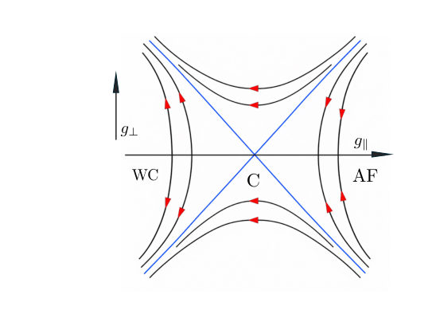
<figcaption class="paper-figure-caption"><b>Fig 1.</b> FIG. 1: The figure depicts the BKT RG flows in various regimes. In the AF (asymptotic freedom) regime, which corre- sponds to g∥&gt; 0, the current-current perturbation is relevant. The system exhibits asymptotic freedom at high energy. The RG flow lines are monotonic and in the UV they end on the fixed points that lie on the x-axis. In contrast, in the WC (weak coupling) regime, the current-current perturbation is irrelevant. The RG flow lines are monotonic and in the IR, they end on the fixed points that lie on the x-axis. In C (cross over or cyclic regime), the RG flow lines are periodic forming limit cycles with a period depending on the RG invariant Q.</figcaption>
</figure>
</div>

<p><strong>Summary.</strong> This work establishes a deep connection between the Renormalization Group (RG) flow and real-time quantum dynamics for the perturbed SU(2)_1 WZW model. It proves that the model's cyclic RG behavior is physically realized as a periodic oscillation of its interaction couplings over time. This provides an exact, integrable framework for understanding cyclic quantum field theories.</p>
<p><strong>Why it may be interesting.</strong> The direct, exact dynamical realization of RG limit cycles provides a powerful theoretical tool for understanding non-equilibrium quantum dynamics in strongly interacting systems, which is highly relevant for simulating quantum materials.</p>
<details>
<summary>Detailed structure</summary>
<p><strong>Main problem.</strong> The paper establishes an exact correspondence between the Renormalization Group (RG) evolution and the real-time quantum dynamics for a specific interacting quantum field theory.</p>
<p><strong>Main result.</strong> It demonstrates that the RG limit cycles of the model are physically realized as periodic, time-dependent evolution of the interaction strengths.</p>
<p><strong>Method.</strong> The analysis employs the integrable fermionic representation, solving the time-dependent problem using the generalized Bethe ansatz and deriving quantum Knizhnik-Zamolodchikov equations.</p>
<p><strong>Model / system.</strong> The system is the anisotropic current-current perturbed SU(2)_1 Wess-Zumino-Witten (WZW) model, which is related to the U(1)-symmetric Thirring model. The dynamics are governed by time-dependent coupling strengths, g_parallel(t) and g_perp(t).</p>
<p><strong>Key observables.</strong> The time evolution of the interaction strengths (g_parallel, g_perp) and the RG invariant Q = g_parallel^2 - g_perp^2.</p>
<p><strong>Important parameters / regimes.</strong> The RG flow exhibits three regimes: Asymptotic Freedom (AF), Weak Coupling (WC), and the Cyclic/Crossover regime (C). The periods are characterized by $\lambda_{1-	ext{loop}} = \pi/h$ and $\lambda_{	ext{all-orders}} = 2\pi/h$.</p>
<p><strong>Assumptions / limitations.</strong> The core assumption is the direct identification of physical time ($t$) with the logarithmic RG scale ($\ell$) in the cyclic regime.</p>
<p><strong>Figures summary.</strong> Figure 1 illustrates the BKT RG flows in three regimes: AF (monotonic flow to fixed points), WC (monotonic flow to fixed points), and C (periodic limit cycles).</p>
<p><strong>Paper structure.</strong> The paper proceeds by first analyzing the RG flow equations, identifying the cyclic regime, and then constructing the time-dependent quantum theory using the Bethe ansatz. Consistency conditions derived from quantum integrability then force the time evolution to match the predicted periodic RG cycle.</p>
</details>
<details>
<summary>Abstract</summary>
<p>We establish an exact correspondence between renormalization-group (RG) evolution and real-time quantum dynamics in the anisotropic current-current perturbed $SU(2)_1$ Wess-Zumino-Witten (WZW) model. Using its integrable fermionic representation, we construct the exact time-dependent many-body wavefunction by means of the generalized Bethe ansatz and show that periodic boundary conditions lead to quantum Knizhnik-Zamolodchikov equations associated with the XXZ trigonometric $R$-matrix, which corresponds to the quantum affine algebra $\mathcal{U}_q(\widehat{\mathfrak{sl}_2})$ evaluated in its spin-$1/2$ evaluation representation. Consistency of these equations constrains the temporal evolution of the longitudinal and transverse interaction strengths. In the universal regime, these integrability conditions are exactly equivalent to the Berezinskii-Kosterlitz-Thouless RG flow equations upon identifying physical time with the logarithmic RG scale. Consequently, the RG limit cycles of the anisotropic current-current perturbed $SU(2)_1$ WZW model are realized as periodic real-time evolution of its interaction strengths. Our results provide an exact dynamical realization of RG limit cycles and establish a direct connection between cyclic RG flows, quantum integrability, and periodically driven interacting quantum field theories.</p>
</details>
<p><sub><a href="#top">↑ back to top</a></sub></p>

<p><a id="paper-2609.34559"></a></p>
<h3 id="microsecond-programmable-synthetic-quantum-matter-circumventing-the-adiabatic-bottleneck-for-heisenberg-limited-metrology"><a href="http://arxiv.org/abs/2609.34559v1">Microsecond-Programmable Synthetic Quantum Matter: Circumventing the Adiabatic Bottleneck for Heisenberg-Limited Metrology</a></h3>
<p><strong>Authors:</strong> Soi-Chan Lei<br>
<strong>Type:</strong> both · <strong>Category:</strong> other · <strong>PDF:</strong> <a href="https://arxiv.org/pdf/2609.34559v1">https://arxiv.org/pdf/2609.34559v1</a><br>
<strong>Analysis basis:</strong> full PDF text, analyzed in chunks
<strong>Topic relevance:</strong> <code>Tavis-Cummings &amp; cavity-many-emitter</code> <strong>3/5</strong> · <code>analog quantum simulation</code> <strong>3/5</strong> · <code>methods for driven-dissipative</code> <strong>3/5</strong> · <code>quantum optics experiment</code> <strong>3/5</strong></p>
<div class="figure-strip-hint">↔ Scroll figures horizontally</div>
<div class="paper-figures-scroll">
<figure class="paper-figure-card">
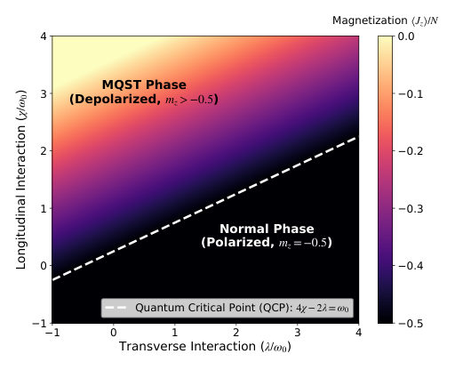
<figcaption class="paper-figure-caption"><b>Fig 1.</b> FIG. 1. Mean-Field Ground-State Phase Diagram of the Engineered XXZ Model. The color map indicates the collective magnetization mz = ⟨Jz⟩/N. The dashed white line denotes the semi-classical quantum critical point (QCP) boundary at |4χ −2λ| = ω0, separating the fully polarized Normal Phase from the depolarized Macroscopic Quantum Self-Trapping (MQST) Phase.</figcaption>
</figure>
<figure class="paper-figure-card">
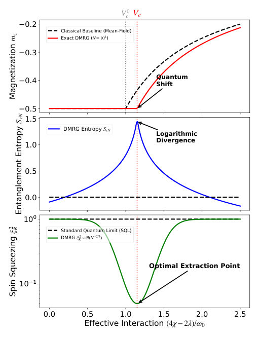
<figcaption class="paper-figure-caption"><b>Fig 2.</b> FIG. 2. DMRG Evaluation of the Macroscopic Quan- tum Critical Point. A 1D parameter sweep of the effective interaction V = (4χ−2λ)/ω0 for N = 104 atoms. (Top) The order parameter mz reveals a finite-size quantum shift of the critical point (Vc &gt; 1) relative to the classical mean-field base- line. (Middle) The bipartite von Neumann entanglement entropy SvN diverges logarithmically exactly at Vc, signaling the breakdown of the product-state assumption. (Bottom) The spin squeezing parameter ξ2 R reaches a global minimum at the quantum-shifted QCP, breaking the SQL but remaining strictly bounded by the static OAT scaling limit (O(N −2/3)).</figcaption>
</figure>
<figure class="paper-figure-card">
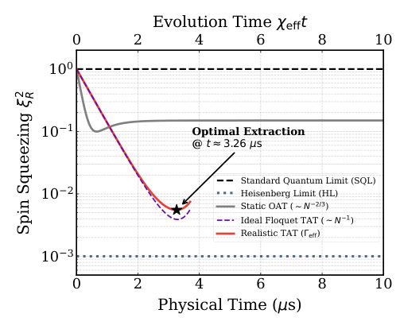
<figcaption class="paper-figure-caption"><b>Fig 3.</b> FIG. 3. Macroscopic Entanglement Generation via Floquet TAT Dynamics. TDVP real-time evolution of the spin squeezing parameter ξ2 R for N = 1000 atoms. Starting from the SQL (ξ2 R = 1), static OAT dynamics (gray solid) is fundamentally bottlenecked at O(N −2/3). In contrast, the ideal Floquet TAT protocol (purple dashed) drives an expo- nential reduction toward the Heisenberg limit (O(1/N)). Un- der realistic experimental decoherence (Γeff = 0.0005), the system (red solid) reaches its optimal extractable squeezing limit (black star) at t ≈3.26 µs. The U-shaped rebound sig- nifies the onset of dissipation dominance. The abrupt termi- nation of the exact TDVP trajectory marks the entanglement...</figcaption>
</figure>
</div>

<p><strong>Summary.</strong> This paper proposes using rapid, non-adiabatic Floquet driving in a Bose-Einstein condensate to synthesize complex quantum interactions necessary for high-precision quantum metrology. By operating on a microsecond timescale, the method overcomes decoherence limitations and successfully demonstrates the generation of Heisenberg-limited spin squeezing. The use of advanced tensor network methods allows for the exact simulation of these large-scale, non-equilibrium dynamics.</p>
<p><strong>Why it may be interesting.</strong> This work is highly relevant as it provides a concrete, experimentally feasible pathway (using cavity QED) to surpass fundamental quantum noise limits in metrology by mastering non-equilibrium quantum control.</p>
<details>
<summary>Detailed structure</summary>
<p><strong>Main problem.</strong> The paper addresses the challenge of generating macroscopic quantum entanglement necessary for Heisenberg-limited metrology while circumventing the limitations imposed by slow adiabatic dynamics and environmental decoherence.</p>
<p><strong>Main result.</strong> A non-adiabatic Floquet protocol in a single-cavity BEC can rapidly generate Heisenberg-limited spin squeezing ($\xi_R^2 \sim 1/N$) on a microsecond timescale, which is faster than typical decoherence rates.</p>
<p><strong>Method.</strong> The authors employ Floquet engineering to synthesize effective Two-Axis Twisting (TAT) interactions and use advanced tensor network methods (MPO/TDVP) to simulate the non-equilibrium dynamics for large systems.</p>
<p><strong>Model / system.</strong> The physical system is a single-cavity Bose-Einstein condensate modeled by an engineered collective XXZ spin Hamiltonian. The dynamics are controlled via rapid, non-adiabatic Floquet pulses to realize the required TAT interactions.</p>
<p><strong>Key observables.</strong> Wineland spin-squeezing parameter ($\xi_R^2$), Quantum Fisher Information ($F_Q$), and the expectation values of macroscopic spin operators ($J_\alpha$).</p>
<p><strong>Important parameters / regimes.</strong> Microsecond ($\mu$s) timescale for the protocol, comparison between Standard Quantum Limit (SQL) and Heisenberg Limit (HL), and the system size ($N=10^3$ to $10^4$).</p>
<p><strong>Assumptions / limitations.</strong> The primary assumption is that the non-adiabatic quench can rapidly generate entanglement faster than environmental decoherence, and that the MPO/FSA encoding accurately captures the infinite-range interactions.</p>
<p><strong>Figures summary.</strong> Figures likely compare the achievable spin squeezing ($\xi_R^2$) under ideal unitary evolution versus the effect of environmental decoherence, demonstrating the rapid, non-adiabatic approach to the Heisenberg Limit.</p>
<p><strong>Paper structure.</strong> The paper first establishes the metrological goal and the limitations of adiabatic methods. It then details the Hamiltonian engineering using Floquet protocols to synthesize TAT interactions. The core is the development of the MPO/FSA framework to simulate the dynamics, culminating in the demonstration of Heisenberg-limited squeezing on the microsecond timescale.</p>
</details>
<details>
<summary>Abstract</summary>
<p>Generating macroscopic quantum entanglement is central to quantum metrology. While traversing a quantum critical point yields Heisenberg-limited precision, adiabatic schemes are restricted by slow dynamics and decoherence. Here, we propose a non-adiabatic Floquet protocol in a single-cavity Bose-Einstein condensate to circumvent these limitations. By applying rapid rotations and phase jumps, we dynamically synthesize effective Two-Axis Twisting (TAT) interactions from native longitudinal couplings. To evaluate this beyond mean-field limits, we develop an exact finite-state automaton Matrix Product Operator (MPO) encoding that strictly bounds the virtual dimension to $\mathcal{O}(1)$, enabling exact DMRG and TDVP simulations for large systems. Tracking non-equilibrium Floquet TAT dynamics and environmental decoherence for $N=10^3$ ensembles, we demonstrate that the quench rapidly generates Heisenberg-limited spin squeezing ($ξ_R^2 \sim 1/N$). The microsecond timescale of this protocol decouples the generation process from typical millisecond decoherence, with phenomenological models revealing an optimal extraction time near $t \approx 3.26~μs$. This work establishes a feasible route for realizing Heisenberg-limited metrology in current cavity-QED platforms.</p>
</details>
<p><sub><a href="#top">↑ back to top</a></sub></p>

<p><a id="paper-2609.33228"></a></p>
<h3 id="occupation-selective-photon-pair-interactions-in-a-flux-pumped-squid-resonator"><a href="http://arxiv.org/abs/2609.33228v1">Occupation-selective photon-pair interactions in a flux-pumped SQUID resonator</a></h3>
<p><strong>Authors:</strong> L. N. Ferreira, D. Z. Rossatto, A. S. M. de Castro, G. D. de Moraes Neto<br>
<strong>Type:</strong> theory · <strong>Category:</strong> other · <strong>PDF:</strong> <a href="https://arxiv.org/pdf/2609.33228v1">https://arxiv.org/pdf/2609.33228v1</a><br>
<strong>Analysis basis:</strong> full PDF text, analyzed in chunks
<strong>Topic relevance:</strong> <code>Tavis-Cummings &amp; cavity-many-emitter</code> <strong>3/5</strong> · <code>analog quantum simulation</code> <strong>3/5</strong> · <code>driven-dissipative phase transition</code> <strong>2/5</strong> · <code>methods for driven-dissipative</code> <strong>2/5</strong> · <code>Keldysh / 2PI / non-Gaussian methods</code> <strong>1/5</strong> · <code>interference shaping light</code> <strong>1/5</strong></p>
<div class="figure-strip-hint">↔ Scroll figures horizontally</div>
<div class="paper-figures-scroll">
<figure class="paper-figure-card">
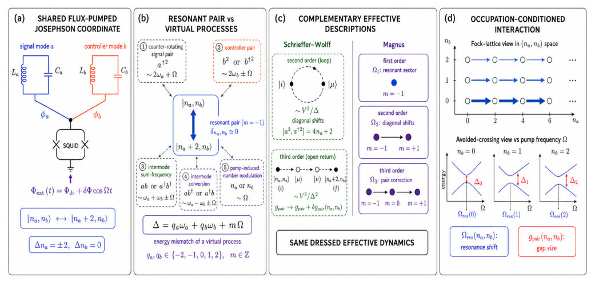
<figcaption class="paper-figure-caption"><b>Fig 1.</b> FIG. 1. From a shared flux-pumped Josephson coordinate to an occupation-conditioned pair interaction. (a) The signal mode a and controller mode b have finite zero-point phase across the same SQUID, modulated by Φext(t). The target process creates or annihilates a signal-mode photon pair while leaving the controller occupation unchanged, ∆na = ±2 and ∆nb = 0. (b) Near the pair resonance, the m = −1 transition |na, nb⟩↔|na + 2, nb⟩, with δna,nb ≃0, is retained explicitly. Counter-rotating signal-pair, controller-pair, intermode sum–frequency, intermode-conversion, and pump-induced number-modulation processes contribute through off-resonant virtual excursions with mismatch ∆= qaωa + qbωb + mΩ,...</figcaption>
</figure>
<figure class="paper-figure-card">
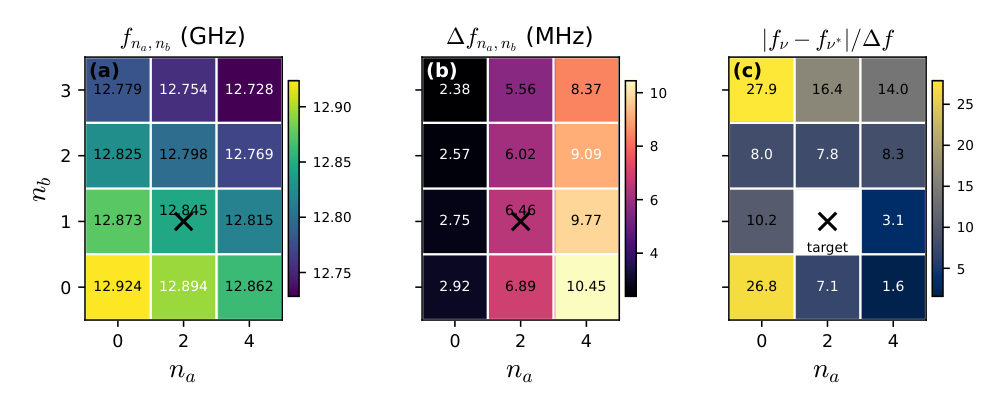
<figcaption class="paper-figure-caption"><b>Fig 2.</b> FIG. 2. Two-dimensional occupation-resolved pair spectrum. Results are obtained from the numerically converged unexpanded two-mode cosine Floquet calculation for (na, nb) = (0, 2, 4) × (0, 1, 2, 3). (a) Pair-resonance frequency fna,nb, determined by the diagonal nonlinear spectrum. (b) Avoided-crossing gap ∆fna,nb, determined by the physical pair-transition matrix element. The systematic decrease of the gap with increasing nb is evaluated after each cell has been individually tuned to resonance and therefore reflects matrix-element conditioning rather than a residual cross-Kerr detuning. (c) Local spectral-separation ratio Rν = |fν −fν⋆|/∆fν relative to the target cell ν⋆= (2, 1) (cross)....</figcaption>
</figure>
<figure class="paper-figure-card">
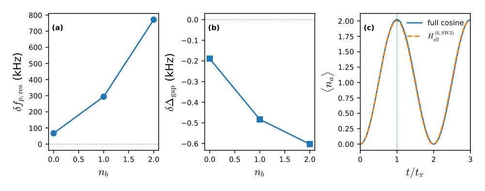
<figcaption class="paper-figure-caption"><b>Fig 3.</b> FIG. 3. Validation of H(6,3) eff against the unexpanded two-mode cosine. (a) Resonance-frequency error and (b) avoided- crossing-gap error for the vacuum-pair sectors. (c) Signal occupation at the calibrated nb = 1 resonance. The close dynamical agreement over the first transfer cycle reflects the much smaller error in the pair matrix element than in the accumulated diagonal shift.</figcaption>
</figure>
<figure class="paper-figure-card">
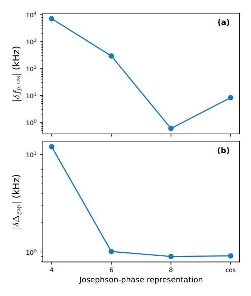
<figcaption class="paper-figure-caption"><b>Fig 4.</b> FIG. 4. Josephson-phase-order convergence at fixed SW3 for the nb = 1 transition |0, 1⟩↔|2, 1⟩: (a) absolute pump- resonance error and (b) absolute avoided-crossing-gap error. Here 4, 6, and 8 denote the highest retained powers of ˆφJ, while “cos” denotes the unexpanded matrix cosine.</figcaption>
</figure>
<figure class="paper-figure-card">
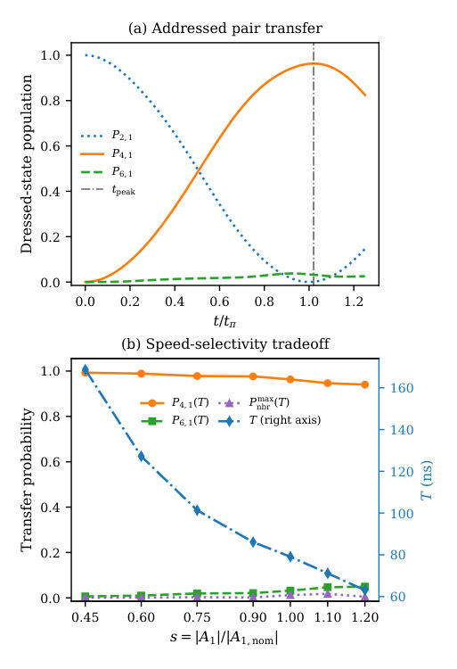
<figcaption class="paper-figure-caption"><b>Fig 5.</b> FIG. 5. Occupation-selective pair transfer in the unex- panded two-mode Josephson-cosine model. Fock labels denote the corresponding static dressed states. (a) Populations of the initial state |2, 1⟩(dotted), target state |4, 1⟩(solid), and higher rung |6, 1⟩(dashed) under the nominal square pump. Time is normalized by tπ = (2∆fgap)−1; the vertical line marks the sampled target-population maximum. (b) First-harmonic amplitude sweep, s = |A1|/|A1,nom|, with the target resonance and pulse duration recalibrated at each point. Circles and squares show P4,1(T) and P6,1(T), respectively. Triangles give the largest final transfer among the separately initialized transitions |0, 1⟩→|2, 1⟩, |2,...</figcaption>
</figure>
</div>

<p><strong>Summary.</strong> This paper analyzes an occupation-conditioned pair interaction in flux-pumped Josephson circuits, treating the system as two coupled bosonic modes. Using advanced perturbation theory, the authors show that the state of one mode can simultaneously control both the resonance frequency and the coupling strength of a nonlinear process in a second mode. This establishes a powerful mechanism for boson-controlled parametric interactions leading to entanglement.</p>
<p><strong>Why it may be interesting.</strong> This work provides a detailed theoretical framework for realizing and controlling nonlinear parametric interactions in superconducting circuits, which is highly relevant to quantum optics and cavity QED.</p>
<details>
<summary>Detailed structure</summary>
<p><strong>Main problem.</strong> The paper identifies and characterizes an occupation-conditioned pair interaction occurring in a system where two bosonic modes share a driven Josephson coordinate.</p>
<p><strong>Main result.</strong> The interaction is a boson-controlled parametric process where the state of one mode controls both the spectral position and the coupling strength of a nonlinear process in the other mode.</p>
<p><strong>Method.</strong> The authors developed complementary analytical descriptions using time-dependent Schrieffer–Wolff and Magnus expansions, benchmarking the effective theory against a full Floquet treatment.</p>
<p><strong>Model / system.</strong> The physical platform is a flux-pumped Josephson circuit, modeled by a two-mode Hamiltonian derived from the full Josephson cosine, allowing for parametric photon generation and multimode bosonic control.</p>
<p><strong>Key observables.</strong> Two-dimensional pair spectrum, signal-controller entanglement, and the variation of the pair-transition strength.</p>
<p><strong>Important parameters / regimes.</strong> Normal-mode frequencies, pump frequency ($\Omega$), and the occupation number ($n_b$) of the controller mode.</p>
<p><strong>Assumptions / limitations.</strong> The analysis uses the weak-pump regime for analytical derivations, and the zero-point phases are treated as representative circuit-level parameters.</p>
<p><strong>Figures summary.</strong> Figure 1 illustrates the physical mechanism, showing how virtual corrections from off-resonant processes contribute to the occupation-dependent resonance positions and pair-transition strengths.</p>
<p><strong>Paper structure.</strong> The paper progresses from establishing the physical platform (flux-pumped SQUID) to identifying the specific interaction (occupation-conditioned pair process), detailing the two distinct physical origins of the conditioning (resonance shift vs. gap change), and finally applying the theory to entanglement generation.</p>
</details>
<details>
<summary>Abstract</summary>
<p>Flux-pumped Josephson circuits provide a versatile platform for parametric photon generation and multimode bosonic control. We identify an occupation-conditioned pair interaction that arises when two harmonic normal modes participate in the same driven SQUID coordinate. We consider a degenerate pair process in which two photons are created or annihilated in a signal mode while the occupation of a second harmonic mode remains unchanged. Although it does not exchange excitations, this controller mode modifies both the resonance frequency and the strength of the pair transition. The two effects have different physical origins: diagonal Josephson nonlinearities shift the pair resonance, whereas the nonlinear Josephson matrix element makes the avoided-crossing gap itself depend on the controller occupation. Starting from the full Josephson cosine, we develop complementary time-dependent Schrieffer--Wolff and Magnus descriptions that expose the direct and virtual processes responsible for this interaction, and benchmark the resulting effective theory against a numerically converged Floquet treatment of the unexpanded two-mode circuit Hamiltonian. The occupation dependence produces a two-dimensional pair spectrum that enables selective transitions within the bosonic Fock lattice. When the controller is prepared in a coherent superposition, the same interaction converts this conditional dynamics into signal--controller entanglement and controller-dependent non-Gaussian state generation. Observable-level comparisons further show that the variation of the pair-transition strength cannot be reproduced by occupation-dependent resonance shifts alone. These results establish a boson-controlled parametric interaction in which the state of one harmonic mode controls both the spectral position and the coupling strength of a nonlinear process in another.</p>
</details>
<p><sub><a href="#top">↑ back to top</a></sub></p>

<p><a id="paper-2609.33621"></a></p>
<h3 id="boolean-cumulants-and-exact-reduced-descriptions-of-renewal-driven-systems"><a href="http://arxiv.org/abs/2609.33621v1">Boolean Cumulants and Exact Reduced Descriptions of Renewal-Driven Systems</a></h3>
<p><strong>Authors:</strong> Marco Bianucci, Riccardo Mannella<br>
<strong>Type:</strong> theory · <strong>Category:</strong> statistical mechanics · <strong>PDF:</strong> <a href="https://arxiv.org/pdf/2609.33621v1">https://arxiv.org/pdf/2609.33621v1</a><br>
<strong>Analysis basis:</strong> full PDF text, analyzed in chunks
<strong>Topic relevance:</strong> <code>Keldysh / 2PI / non-Gaussian methods</code> <strong>3/5</strong> · <code>methods for driven-dissipative</code> <strong>3/5</strong> · <code>analog quantum simulation</code> <strong>1/5</strong> · <code>correlated / nonlocal dissipation</code> <strong>1/5</strong> · <code>driven-dissipative phase transition</code> <strong>1/5</strong> · <code>non-equilibrium universality</code> <strong>1/5</strong> · <code>quantum measurements</code> <strong>1/5</strong></p>
<div class="figure-strip-hint">↔ Scroll figures horizontally</div>
<div class="paper-figures-scroll">
<figure class="paper-figure-card">
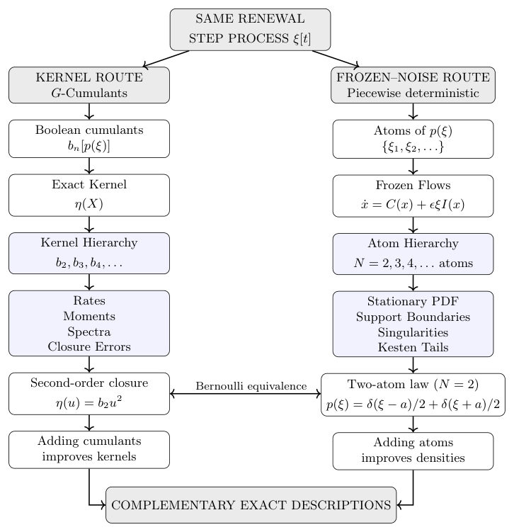
<figcaption class="paper-figure-caption"><b>Fig 1.</b> Figure 1: Conceptual structure of the present work. Renewal step processes admit two exact and complementary descriptions. The Boolean route organizes the reduced dynamics in kernel space through the exact kernel η(X) and the associated cumulant hierarchy. The frozen-noise route organizes stationary measures in density space through frozen flows and the atom hierarchy associated with the jump distribution.</figcaption>
</figure>
<figure class="paper-figure-card">
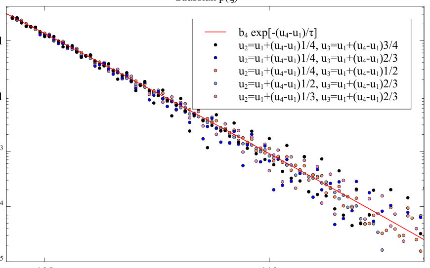
<figcaption class="paper-figure-caption"><b>Fig 2.</b> Figure 2: Log-plots of the 4-time G-cumulant ⟨⟨ξ(u1)ξ(u2)ξ(u3)ξ(u4)⟩⟩(G) with u1 = 100, in the case of exponential waiting time with τ = 1, for the Gaussian PDF p(ξ) = exp[−ξ2/2]/ √</figcaption>
</figure>
<figure class="paper-figure-card">
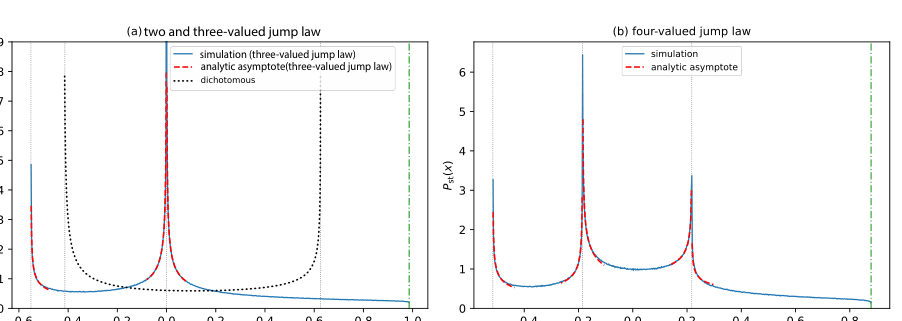
<figcaption class="paper-figure-caption"><b>Fig 3.</b> Figure 3: Stationary density of the LIMI model (55) driven by step renewal noise (γ = τ = 1, ϵ = 0.5, β = 0.4, 8 × 106 renewal steps). (a) Three-valued jump distribution ξ ∈{− √</figcaption>
</figure>
<figure class="paper-figure-card">
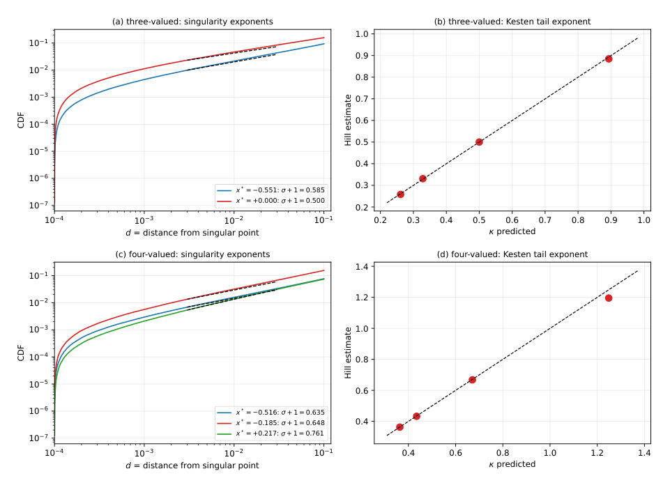
<figcaption class="paper-figure-caption"><b>Fig 4.</b> Figure 4: (a),(c) Log-log plots of the cumulative distribution near divergent fixed points for the three- and four-valued jump distributions. Black dashed lines indicate the theoretical slopes σi + 1 from Eq. (78). (b),(d) Comparison between numerical Hill estimates and the theoretical Kesten exponent κ from Eq. (83) in the unstable regime (ϵβ max |ξ| &gt; γ). Dashed lines represent exact equality. Trajectories use 3 × 106 steps, with tail indices estimated over the upper 2% of positive state values.</figcaption>
</figure>
</div>

<p><strong>Summary.</strong> This paper develops a rigorous framework to describe the reduced dynamics of systems driven by noise with finite correlation times, moving beyond standard Gaussian approximations. It introduces two complementary mathematical tools: the Boolean cumulant hierarchy for kernel dynamics and a frozen-noise representation for stationary densities. This allows for exact calculations of observables that are typically intractable for general renewal processes.</p>
<p><strong>Why it may be interesting.</strong> The distinction between kernel dynamics (rates/moments) and density dynamics (support/singularities) is crucial for modeling non-equilibrium quantum systems where memory effects are non-Gaussian.</p>
<details>
<summary>Detailed structure</summary>
<p><strong>Main problem.</strong> Developing exact reduced descriptions for stochastic systems driven by non-Gaussian, finite-correlation renewal processes, moving beyond the standard Gaussian approximation.</p>
<p><strong>Main result.</strong> The reduced dynamics admit two exact and complementary descriptions: one governed by Boolean cumulants (for kernel/rates) and another by frozen-noise flows (for stationary densities).</p>
<p><strong>Method.</strong> The authors employ a generalized-cumulant formalism, contrasting the Boolean cumulant hierarchy (acting on the kernel) with the frozen-noise representation (acting on the density).</p>
<p><strong>Model / system.</strong> The analysis focuses on stochastic differential equations driven by renewal noise, exemplified by the LIMI/CAM model. The system evolution is governed by a stochastic Liouville equation.</p>
<p><strong>Key observables.</strong> Relaxation rates, moments, closure errors, support boundaries, singularity exponents, and Kesten tail indices.</p>
<p><strong>Important parameters / regimes.</strong> The correlation time ($ au$) of the forcing, the jump distribution parameters, and the coupling strength ($\epsilon$).</p>
<p><strong>Assumptions / limitations.</strong> The standard Gaussian assumption fails when correlation times are finite or when the forcing is a general renewal process; the work provides exact descriptions for these cases.</p>
<p><strong>Figures summary.</strong> Figure 1 conceptually illustrates the two complementary routes: the Boolean cumulant/Kernel Hierarchy route and the Atom/Frozen Flows route.</p>
<p><strong>Paper structure.</strong> The paper establishes the failure of Gaussian approximations, introduces the two complementary exact descriptions (Boolean cumulants vs. Frozen-Noise), derives the mathematical machinery for each (including the Boolean generating function), and applies these tools to specific models like the LIMI model.</p>
</details>
<details>
<summary>Abstract</summary>
<p>Reduced descriptions of unresolved fluctuations are commonly based on Gaussian processes, despite the fact that many realistic forcings possess finite correlation times and a renewal structure. For memoryless step (Kubo-Anderson) noise, we show that the reduced dynamics admit two exact and complementary descriptions: a kernel representation governed by the Boolean cumulants of the jump distribution, and a frozen-noise representation for stationary probability densities. For exponentially distributed waiting times, the totally time-ordered $G$-cumulants coincide exactly with the Boolean cumulants of the jump law, leading to an exact resummation of the memory kernel. The resulting kernel is expressed through the Boolean generator $η$ evaluated on a resolvent operator. Within this hierarchy, second-order closure is exact if and only if the jump distribution is symmetric Bernoulli. For general jump laws, the leading closure error is controlled by the universal combination $(b4/b2)λ^2$. Unlike classical cumulant expansions, however, the Boolean hierarchy acts on the reduced kernel rather than directly on the stationary measure. A complementary exact description is provided by the frozen-noise representation. For the linear system with linear multiplicative interaction (LIMI/CAM) model, it reduces the dynamics to a random affine recursion and yields exact expressions for stationary densities and Kesten tail indices. The analysis reveals that rates, moments, and closure errors are governed by the Boolean hierarchy, whereas stationary-density properties are determined by the geometry of the jump distribution through the frozen dynamics. Finite-correlation reductions are therefore controlled not only by the variance and correlation time of the forcing, but also by the underlying combinatorial structure of the renewal process. For memoryless renewal noise, that structure is Boolean.</p>
</details>
<p><sub><a href="#top">↑ back to top</a></sub></p>

<p><a id="paper-2609.34529"></a></p>
<h3 id="cylinder-defect-casimir-energy-and-weyl-anomalies"><a href="http://arxiv.org/abs/2609.34529v1">Cylinder Defect Casimir Energy and Weyl Anomalies</a></h3>
<p><strong>Authors:</strong> Yang Zhou<br>
<strong>Type:</strong> theory · <strong>Category:</strong> statistical mechanics · <strong>PDF:</strong> <a href="https://arxiv.org/pdf/2609.34529v1">https://arxiv.org/pdf/2609.34529v1</a><br>
<strong>Analysis basis:</strong> full PDF text, analyzed in chunks
<strong>Topic relevance:</strong> <code>Keldysh / 2PI / non-Gaussian methods</code> <strong>3/5</strong> · <code>driven-dissipative phase transition</code> <strong>2/5</strong> · <code>methods for driven-dissipative</code> <strong>2/5</strong> · <code>analog quantum simulation</code> <strong>1/5</strong> · <code>correlated / nonlocal dissipation</code> <strong>1/5</strong> · <code>non-equilibrium universality</code> <strong>1/5</strong> · <code>quantum measurements</code> <strong>1/5</strong></p>
<div class="figure-strip-hint">↔ Scroll figures horizontally</div>
<div class="paper-figures-scroll">
<figure class="paper-figure-card">
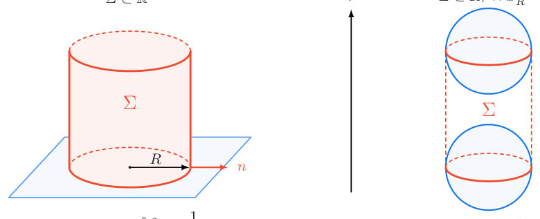
<figcaption class="paper-figure-caption"><b>Fig 1.</b> FIG. 1. Two cylindrical embeddings of a conformal surface defect, with ambient spatial slices shown schematically in blue. (a) A circular cylinder in flat Rd has ˚Π 2 = 1/(2R2); n is an outward unit normal. (b) Ambient radial quantization maps a plane through the origin to Rτ × S1 R ⊂Rτ × Sd−1 R , with Πµ ab = 0. Both induced metrics are intrinsically flat.</figcaption>
</figure>
</div>

<p><strong>Summary.</strong> This paper calculates the Casimir energy associated with defects on curved surfaces, distinguishing between two geometric embeddings: a circular cylinder and a great cylinder. By employing anomaly matching techniques and comparing free-field and holographic results, the authors derive specific energy formulas dependent on geometric parameters and anomaly coefficients. This work provides a detailed theoretical framework for understanding boundary contributions to vacuum energy in quantum field theories.</p>
<p><strong>Why it may be interesting.</strong> The rigorous calculation of boundary/defect energy via anomaly matching provides powerful techniques applicable to open quantum systems and boundary effects in condensed matter models.</p>
<details>
<summary>Detailed structure</summary>
<p><strong>Main problem.</strong> The paper determines the Casimir energy associated with a conformal surface defect, comparing results for two distinct geometric embeddings: a circular cylinder and a great cylinder.</p>
<p><strong>Main result.</strong> The Casimir energy for the great cylinder is found to be $E_{	ext{great}} = -b/(12R)$, while the circular cylinder yields $E_{\log} = -rac{d_1}{24R} \log(R/\epsilon)$.</p>
<p><strong>Method.</strong> The authors employ anomaly matching, utilizing defect Ward identities, free-field calculations, and holographic methods (like Wess–Zumino functionals) to constrain the vacuum energy.</p>
<p><strong>Model / system.</strong> The analysis considers a two-dimensional conformal field theory (CFT) on a circle coupled to a higher-dimensional CFT, exhibiting a conformal surface defect $\Sigma$. Calculations are performed on both bent (circular) and great cylinder geometries.</p>
<p><strong>Key observables.</strong> Casimir energy ($E$), defect anomaly coefficients ($d_1, b$), and the Weyl response density ($\mathcal{A}_D$).</p>
<p><strong>Important parameters / regimes.</strong> Radius $R$, cutoff scale $\epsilon$, and anomaly coefficients $d_1$ and $b$.</p>
<p><strong>Assumptions / limitations.</strong> The results rely on specific conventions for anomaly definitions and the careful subtraction of counterterms to handle divergences.</p>
<p><strong>Figures summary.</strong> Figure 1 illustrates the two embeddings: (a) Bent cylinder in flat $\mathbb{R}^d$ and (b) Great cylinder in $\mathbb{R} 	imes S^{d-1}$.</p>
<p><strong>Paper structure.</strong> The paper systematically compares the energy calculations for the two embeddings, deriving the logarithmic and inverse-linear energy forms using anomaly constraints, and verifying these results using free-field and holographic models.</p>
</details>
<details>
<summary>Abstract</summary>
<p>We distinguish two Casimir observables associated with a conformal surface defect. A circular cylinder embedded in flat space has a logarithmic contribution to its Casimir energy, $-d_1\log(R/ε)/(24R)$, fixed by the displacement anomaly. A great cylinder obtained by radial quantization of the ambient theory instead has Casimir energy $-b/(12R)$ in the conformal defect vacuum with a fixed local anomaly convention. Free-field and holographic calculations provide checks of the proposed relations in both embeddings.</p>
</details>
<p><sub><a href="#top">↑ back to top</a></sub></p>

<p><a id="paper-2609.35016"></a></p>
<h3 id="experimental-quantum-computing-enhanced-sensing-using-grovers-algorithm"><a href="http://arxiv.org/abs/2609.35016v1">Experimental quantum-computing-enhanced sensing using Grover's algorithm</a></h3>
<p><strong>Authors:</strong> Mathieu Ouellet, Purnendu Sen, Xiangqin Wang, Saswata Roy, Xingrui Song, Vladimir Kremenetski, Sridhar Prabhu, Valla Fatemi, Peter L. McMahon<br>
<strong>Type:</strong> experiment · <strong>Category:</strong> other · <strong>PDF:</strong> <a href="https://arxiv.org/pdf/2609.35016v1">https://arxiv.org/pdf/2609.35016v1</a><br>
<strong>Analysis basis:</strong> full PDF text, analyzed in chunks
<strong>Topic relevance:</strong> <code>QC/QI experiment</code> <strong>3/5</strong> · <code>quantum optics experiment</code> <strong>3/5</strong> · <code>analog quantum simulation</code> <strong>2/5</strong> · <code>quantum measurements</code> <strong>2/5</strong> · <code>Tavis-Cummings &amp; cavity-many-emitter</code> <strong>1/5</strong></p>
<div class="figure-strip-hint">↔ Scroll figures horizontally</div>
<div class="paper-figures-scroll">
<figure class="paper-figure-card">
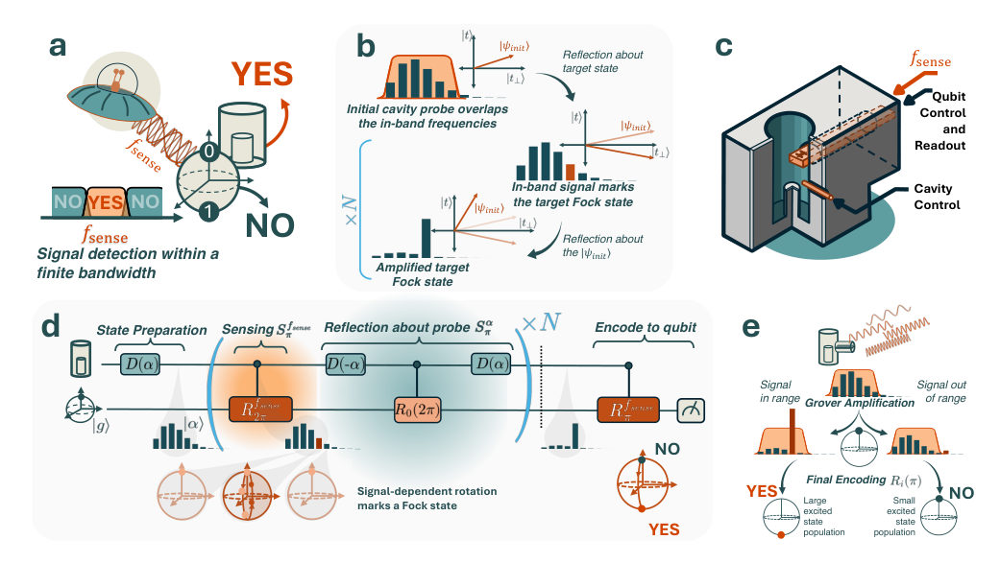
<figcaption class="paper-figure-caption"><b>Fig 1.</b> FIG. 1. Grover-enhanced signal detection with a superconducting cavity. a Binary signal classification: the sensor determines whether a signal belongs to a target frequency band. b Grover amplitude amplification in the cavity Fock-state basis. Starting from a coherent probe, successive reflections about the signal-marked state and the initial probe amplify the marked- state population. c Experimental platform consisting of a superconducting cavity dispersively coupled to a qubit. d Pulse sequence. A displacement D(α) prepares the coherent probe. Each Grover iteration combines a signal-induced rotation Ri(2π) with a reflection about the initial probe, implemented using D(−α), a...</figcaption>
</figure>
<figure class="paper-figure-card">
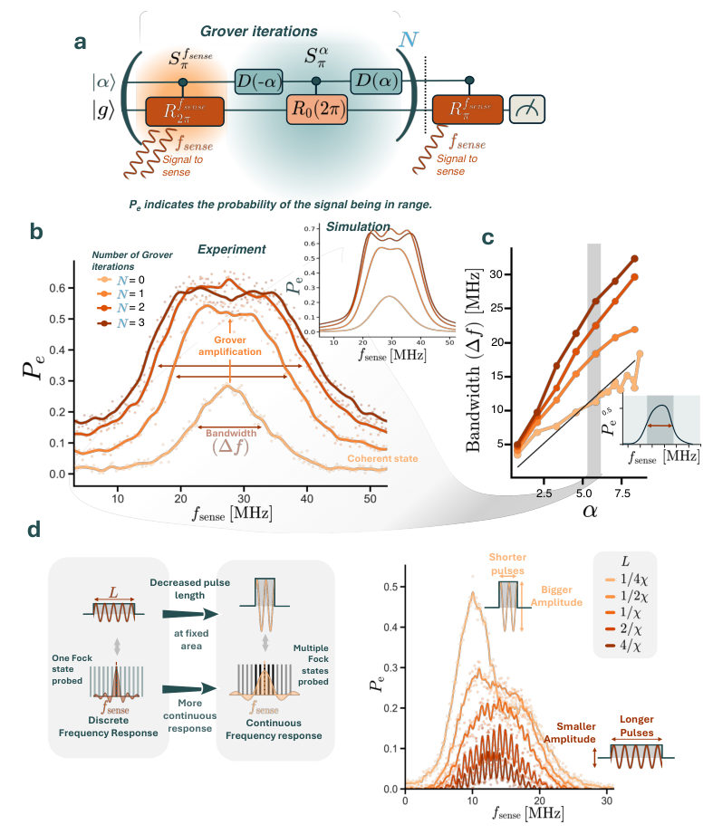
<figcaption class="paper-figure-caption"><b>Fig 2.</b> FIG. 2. Amplitude amplification using Grover’s algorithm and its broadening of the bandwidth of the sensing window. a A coherent state |α = 5.8⟩is subjected to N Grover iterations, where a signal pulse centered at frequency fsense produces number-selective qubit rotations. For the experiments shown here, the signal-pulse duration is 0.25/χ. A final signal pulse maps the classification result onto the qubit, such that the qubit-excitation probability Pe indicates whether fsense lies within the sensing window. b Measured qubit-excitation probability as a function of sensing frequency for N = 0–3 Grover iterations. Grover-based amplification increases both the excitation probability and the...</figcaption>
</figure>
<figure class="paper-figure-card">

<figcaption class="paper-figure-caption"><b>Fig 3.</b> FIG. 3. Demonstration of a Grover-based enhancement in quantum sensing. a Scatter plot of total signal sensed, defined as nshots(2N + 1), required to reach 75% classification accuracy as a function of the target bandwidth ∆f for a signal- pulse duration of 0.25/χ. Classification accuracies and bandwidths were calculated for a range of initial displacements using methods detailed in Appendix C. A protocol with N Grover iterations has a sensing cost of 2N + 1 signal-interaction per shot. Colors denote the number of Grover iterations N, with N = 0 giving the coherent-probe baseline. Points show the mean over 100 trials, and error bars show the standard deviation across these trials. In each...</figcaption>
</figure>
</div>

<p><strong>Summary.</strong> This paper reports an experimental demonstration of using Grover's algorithm to enhance quantum sensing for detecting unknown frequencies in large bandwidths. By repurposing the search algorithm for amplitude amplification in a superconducting qubit-cavity system, the researchers achieved a significant reduction in the required signal resources compared to standard methods. This validates the use of quantum computation for practical, near-term quantum metrology.</p>
<p><strong>Why it may be interesting.</strong> This work directly applies quantum computation principles (Grover's algorithm) to a physical quantum optics system (cavity QED), demonstrating a measurable metrological advantage in a near-term hardware setting.</p>
<details>
<summary>Detailed structure</summary>
<p><strong>Main problem.</strong> To experimentally demonstrate how repurposing Grover's search algorithm can enhance the detection of unknown frequency signals within a large bandwidth, surpassing conventional quantum sensing limits.</p>
<p><strong>Main result.</strong> Grover-based sensing outperformed the natural baseline for bandwidths greater than 10 MHz, achieving a reduction in required sensed signal by over 10 times for high accuracy.</p>
<p><strong>Method.</strong> The protocol uses Grover's amplitude amplification in the cavity Fock-state basis, followed by a number-selective qubit $\pi$-pulse to convert the amplified state population into a measurable qubit excitation probability.</p>
<p><strong>Model / system.</strong> The experiment is performed on a superconducting circuit comprising a single transmon qubit dispersively coupled to a single superconducting cavity.</p>
<p><strong>Key observables.</strong> Qubit-excitation probability, sensing bandwidth ($\Delta f$), and the total number of signal interrogations required for a given accuracy.</p>
<p><strong>Important parameters / regimes.</strong> Detection bandwidth ($\Delta f$), Grover iteration count ($N$), and the crossover bandwidth (around 10 MHz).</p>
<p><strong>Assumptions / limitations.</strong> The protocol is presented as a proof-of-principle demonstration, and the analysis relies on fitting distributions (Poisson, Gaussian) to measured data.</p>
<p><strong>Figures summary.</strong> Figures illustrate the overall sensing process, the dependence of qubit excitation probability on Grover iterations, and comparisons of required signal resources versus bandwidth for different protocol choices.</p>
<p><strong>Paper structure.</strong> The paper details the theoretical proposal, presents the experimental platform (qubit-cavity system), calibrates system parameters (dispersive shift, displacement amplitude), and finally compares the resource scaling of Grover-enhanced sensing against non-Grover baselines.</p>
</details>
<details>
<summary>Abstract</summary>
<p>The combination of quantum sensing with quantum computing to provide an enhancement over conventional quantum sensing has recently emerged as a promising potential application of quantum computing that could give advantages without needing large-scale or fault-tolerant hardware. In this work, we report an experimental demonstration of a recent theoretical proposal to repurpose Grover's search algorithm to improve the ability to detect signals with unknown frequency within a large detection bandwidth. Our experiments were based on a system comprising a single superconducting qubit coupled to a single superconducting cavity, highlighting the modest hardware requirements for realizing the protocol. We found that Grover-based sensing was able to outperform the natural non-Grover baseline for our experimental platform for detection bandwidths $&gt;$10~MHz, with an advantage that empirically grew superlinearly with the bandwidth beyond that break-even point. The use of the Grover-based protocol reduced the amount of signal that needed to be sensed to make an accurate detection decision by more than 10$\times$ for choices of larger detection bandwidth and higher desired detection accuracy. Our results provide a proof-of-principle validation that Grover-based quantum computational sensing can be realized in near-term hardware and provide a metrological advantage well beyond break-even in spite of the additional protocol complexity.</p>
</details>
<p><sub><a href="#top">↑ back to top</a></sub></p>

<p><a id="paper-2609.33094"></a></p>
<h3 id="loss-resilient-quantum-networking-with-dicke-entanglement"><a href="http://arxiv.org/abs/2609.33094v1">Loss-Resilient Quantum Networking with Dicke Entanglement</a></h3>
<p><strong>Authors:</strong> Bowen Wang, Hongyu Yang, Jiacheng Sun, Wanping Zhou, Jizhou Wu, Yunlong Xiao, Dian Wu, Jian Wu<br>
<strong>Type:</strong> experiment · <strong>Category:</strong> quantum information and computing · <strong>PDF:</strong> <a href="https://arxiv.org/pdf/2609.33094v1">https://arxiv.org/pdf/2609.33094v1</a><br>
<strong>Analysis basis:</strong> full PDF text, analyzed in chunks
<strong>Topic relevance:</strong> <code>QC/QI experiment</code> <strong>3/5</strong> · <code>quantum optics experiment</code> <strong>3/5</strong> · <code>Dicke superradiance</code> <strong>2/5</strong> · <code>correlated / nonlocal dissipation</code> <strong>2/5</strong> · <code>quantum measurements</code> <strong>1/5</strong></p>
<div class="figure-strip-hint">↔ Scroll figures horizontally</div>
<div class="paper-figures-scroll">
<figure class="paper-figure-card">

<figcaption class="paper-figure-caption"><b>Fig 1.</b> Figure 1. Open-Destination Teleportation. a, Quantum network communication with the eight-photon Dicke state |D(4) 8 ⟩. The sender (magenta) performs a Bell-state measurement (BSM) between the input and its share of the Dicke state. One of the seven remote agents is selected as the receiver (blue), while the other six act as assisting agents (green), whose local measurement outcomes are communicated through classical channels (dashed lines) and determine whether the teleportation event is accepted. For accepted events, the BSM outcome specifies the local correction U at the receiver. b, Operation with two assisting agents unavailable (grey). Their measurement outcomes are absent, so...</figcaption>
</figure>
<figure class="paper-figure-card">

<figcaption class="paper-figure-caption"><b>Fig 2.</b> Figure 2. Experimental Setup and Benchmarking of Dicke States. a, Experimental setup for generating the eight-photon Dicke state |D(4) 8 ⟩and performing the polarization-path Bell-state measurement. A mode-locked Ti:sapphire laser (775 nm, 80 MHz) pumps a ppKTP crystal to produce four photon pairs via spontaneous parametric down-conversion. A cascaded beam-splitter network distributes the photons into eight spatial modes. Mode 1 is used for the Bell-state measurement (BSM) with the input qubit, while the other seven modes form the remote agents of the network. b, Fidelity benchmark for photonic Dicke-state generation. Reported four- and six-photon results are shown alongside the six- and...</figcaption>
</figure>
<figure class="paper-figure-card">

<figcaption class="paper-figure-caption"><b>Fig 3.</b> Figure 3. Teleportation and Telecloning Fidelities. a, Open-destination teleportation fidelity for each of the seven possible receivers, evaluated over the uniformly sampled input ensemble E = {|H⟩, |V ⟩, |D⟩, |A⟩, |R⟩, |L⟩}. All receiver choices remain well above the classical limit of 2/3 (black dashed line). b, Average 1 →7 quantum telecloning at each of the seven remote agents. The red dashed line marks the optimal universal cloning fidelity of 5/7. Error bars denote one standard deviation from counting statistics.</figcaption>
</figure>
<figure class="paper-figure-card">

<figcaption class="paper-figure-caption"><b>Fig 4.</b> Figure 4. Network Performance Hierarchy under Agent Unavailability. a, Theoretical teleportation fidelity as a function of the number m of unavailable agents. For Dicke state |D(4) 8 ⟩, its fidelity follows a stepwise hierarchy; the three levels are 7/9, 11/15 and 5/7. The GHZ benchmark drops to the classical limit of 2/3 once any single agent becomes unavailable. b, Experimental realization of the hierarchy with the eight-photon Dicke state. Points of different colors show the individual fidelities for the seven receivers, while dark points show the corresponding averages at fixed receiver and fixed m; the solid line marks the ideal Dicke state values. c, Post-selection acceptance...</figcaption>
</figure>
<figure class="paper-figure-card">

<figcaption class="paper-figure-caption"><b>Fig 5.</b> Figure 5. Network Performance under Failed Detection and Lossy Distribution. a, Open-destination teleportation with a failed detection during Dicke state preparation. The path to agent 8 is blocked and agent 3 is chosen as the receiver. Dark blue bars show the experimental data for the input ensemble E, and the light blue bars show the corresponding theoretical values. The measured average fidelity is 0.768(8), above the classical limit of 2/3 (grey). b, Probability of successful communication as a function of the independent loss probability γ, taking a fidelity of 3/4 as the success threshold. Red curves show open- and fixed-destination teleportation with the Dicke state, while the black...</figcaption>
</figure>
</div>

<p><strong>Summary.</strong> This paper experimentally realizes and tests the utility of eight-photon Dicke entanglement for quantum networking. It proves that this highly entangled state allows quantum tasks like teleportation and cloning to maintain functionality above classical bounds even when the network suffers from photon loss or missing agent data. The key finding is that the network performance degrades in a predictable, stepwise manner, confirming Dicke entanglement's promise for loss-resilient quantum technologies.</p>
<p><strong>Why it may be interesting.</strong> The demonstration of a predictable, stepwise hierarchy in performance as resources fail provides a deep insight into the structural robustness of multipartite entanglement, which is highly relevant for designing fault-tolerant quantum communication protocols.</p>
<details>
<summary>Detailed structure</summary>
<p><strong>Main problem.</strong> The research addresses the challenge of maintaining quantum network functionality when subjected to physical imperfections such as photon loss, imperfect detection, or missing information from participating agents.</p>
<p><strong>Main result.</strong> The study demonstrates that Dicke entanglement serves as a robust resource, enabling quantum tasks like open-destination teleportation and telecloning to remain above classical limits even under significant network impairments.</p>
<p><strong>Method.</strong> The authors experimentally generated and characterized an eight-photon Dicke state and implemented two network tasks, analyzing performance by systematically introducing controlled levels of channel loss and agent information loss.</p>
<p><strong>Model / system.</strong> The system utilizes an eight-photon half-excitation Dicke state, generated using spontaneous parametric down-conversion and distributed across eight spatial modes via a beam-splitter network.</p>
<p><strong>Key observables.</strong> Fidelity of the generated state (0.922(11)), Open-Destination Teleportation (ODT) fidelity (0.926(7)-0.941(6)), and quantum telecloning fidelity (0.713(3)).</p>
<p><strong>Important parameters / regimes.</strong> The analysis tracks performance relative to the classical limit (2/3) and the optimal telecloning fidelity (5/7), varying parameters include photon loss ($\gamma$) and the number of unavailable assisting agents.</p>
<p><strong>Assumptions / limitations.</strong> The analysis assumes the ability to model channels with independent loss probability $\gamma$ and notes that equal fidelity does not guarantee operational equivalence.</p>
<p><strong>Figures summary.</strong> Figures illustrate the ODT protocol with unavailable agents, the experimental setup for state generation, and plots showing the fidelity hierarchy for both ODT and telecloning across varying loss/failure conditions.</p>
<p><strong>Paper structure.</strong> The paper first establishes the physical resource (Dicke state) and then systematically tests its utility by implementing and analyzing two key protocols (ODT and telecloning) under increasingly realistic and degraded operational conditions (loss, missing data).</p>
</details>
<details>
<summary>Abstract</summary>
<p>Multipartite entanglement can endow a quantum network with capabilities unavailable classically, yet their evolution under progressively reduced physical and informational access remains largely unexplored. Here we realize the first eight-photon half-excitation Dicke state, with a fidelity of 0.922(11), and use it to implement two distinct network tasks: open-destination teleportation and quantum telecloning. An unknown state can be teleported from one agent to any of seven remote agents with fidelities of 0.926(7)-0.941(6), while seven approximate clones are distributed with a fidelity of 0.713(3), close to the optimal value of 5/7. The protocol remains above the classical limit under imperfect photon detection, transmission loss and missing information from participating agents, and outperforms the corresponding GHZ benchmarks. As fewer agents contribute, the teleportation fidelity falls through a stepwise hierarchy whose two extremes recover open-destination teleportation and optimal telecloning, connecting both tasks within a single operational framework. These results establish Dicke entanglement as a promising architecture for loss-resilient quantum networks, opening a route towards quantum technologies that retain useful functionality under realistic operating conditions.</p>
</details>
<p><sub><a href="#top">↑ back to top</a></sub></p>

<p><a id="paper-2609.31889"></a></p>
<h3 id="scattering-amplitudes-from-quantum-hardware-a-la-resos"><a href="http://arxiv.org/abs/2609.31889v1">Scattering amplitudes from quantum hardware a la RESOs</a></h3>
<p><strong>Authors:</strong> Raul A Briceno, Ivan M Burbano, Anthony N Ciavarella, Ermal Rrapaj, Thomas R Richardson, Andre Walker-Loud<br>
<strong>Type:</strong> both · <strong>Category:</strong> quantum information and computing · <strong>PDF:</strong> <a href="https://arxiv.org/pdf/2609.31889v1">https://arxiv.org/pdf/2609.31889v1</a><br>
<strong>Analysis basis:</strong> full PDF text, analyzed in chunks
<strong>Topic relevance:</strong> <code>Keldysh / 2PI / non-Gaussian methods</code> <strong>3/5</strong> · <code>QC/QI experiment</code> <strong>3/5</strong> · <code>analog quantum simulation</code> <strong>2/5</strong> · <code>quantum measurements</code> <strong>2/5</strong> · <code>methods for driven-dissipative</code> <strong>1/5</strong></p>
<div class="figure-strip-hint">↔ Scroll figures horizontally</div>
<div class="paper-figures-scroll">
<figure class="paper-figure-card">

<figcaption class="paper-figure-caption"><b>Fig 1.</b> FIG. 1. Average over the energy range atE⋆= [0, 2] of the error of the estimator in Eq. (12) relative to the analytical result in Eq. (8). In the first row, unless stated in the plot, all parameters coincide with those used in the quantum hardware simulations with Nx = 54, which correspond to the markers and the horizontal lines. The second row instead has nominal parameters T = 60at, Nx = 54, atϵ = 0.2 and ∆t = 0.02at. All results in this figure were obtained through tensor networks.</figcaption>
</figure>
<figure class="paper-figure-card">

<figcaption class="paper-figure-caption"><b>Fig 2.</b> FIG. 2. Shown are the three main stages of the correlation functions obtained from the quantum hardware. The top left panel shows the correlation functions in space and time for Nx = 54 spatial lattices. The white line shows the light cone of the quantum circuit used to simulate time evolution. The top right panel shows the result after Fourier transforming to definite spatial momentum for two momenta. The bottom right panel shows the correlator after Fourier transforming to energy for a fixed total atϵ = 1. The dashed line labels the location of the negative binding energy of the “deuteron” bound state. The bottom left panel shows the scattering phase shifts computed from these correlators.</figcaption>
</figure>
<figure class="paper-figure-card">

<figcaption class="paper-figure-caption"><b>Fig 3.</b> Figure 2 summarizes the path from circuit mea- surements to the energy-dependent correlation func-</figcaption>
</figure>
<figure class="paper-figure-card">

<figcaption class="paper-figure-caption"><b>Fig 4.</b> FIG. 3. Shown are the resulting estimators for cot δ/ sin(ap⋆). Each color corresponds to a different physical volume. The shaded regions show a 68% confidence interval for the results from the quantum hardware and the solid lines show noiseless classical simulation of the Trotterized time evolution. The result is averaged over P = 0, ± 2π</figcaption>
</figure>
</div>

<p><strong>Summary.</strong> This work pioneers the use of quantum hardware to calculate scattering amplitudes for a simple lattice fermion model using the RESOs protocol. By measuring real-time correlation functions on an IBM quantum computer, the authors successfully extract scattering phase shifts, validating the method against classical simulations. This represents a significant step toward simulating complex quantum field theories on quantum processors.</p>
<p><strong>Why it may be interesting.</strong> It demonstrates a concrete, advanced application of quantum computation (RESOs) to a core problem in particle/nuclear physics (scattering amplitudes), bridging quantum information science with high-energy theory.</p>
<details>
<summary>Detailed structure</summary>
<p><strong>Main problem.</strong> The paper addresses the challenge of calculating fundamental scattering amplitudes in quantum field theories using near-term quantum hardware.</p>
<p><strong>Main result.</strong> The authors report the first successful quantum-hardware implementation of the Real-time Estimators for Scattering Observables (RESOs) method for a 1D lattice fermion model.</p>
<p><strong>Method.</strong> They compute finite-volume real-time correlators on an IBM quantum processor, projecting these measurements to extract energy-dependent scattering phase shifts.</p>
<p><strong>Model / system.</strong> The physical model is a one-dimensional lattice theory of non-relativistic spin-1/2 fermions with a contact interaction, described by a lattice Hamiltonian derived from a continuum Lagrangian.</p>
<p><strong>Key observables.</strong> Scattering amplitudes, scattering phase shifts ($\cot \delta / \sin(a p^*)$), and real-time correlation functions $C(t, x)$.</p>
<p><strong>Important parameters / regimes.</strong> Lattice size up to $N_x=54$ sites, up to 20 time steps, and a benchmark bound state energy $E^\star_B = -9.4 	ext{ MeV}$ for $g=-0.2$.</p>
<p><strong>Assumptions / limitations.</strong> The method relies on mapping fermions to qubits via Jordan-Wigner transformation and uses specific error mitigation techniques to extract energy information.</p>
<p><strong>Figures summary.</strong> Figure 1 compares the estimator error against analytical and tensor network results; Figure 2 illustrates the path from circuit measurements to energy-dependent correlation functions.</p>
<p><strong>Paper structure.</strong> The paper introduces the RESOs method for scattering observables, details the implementation on quantum hardware for the 1D fermion model, presents results showing consistency with classical benchmarks, and discusses future scalability.</p>
</details>
<details>
<summary>Abstract</summary>
<p>We report the first quantum-hardware implementation of Real-time Estimators for Scattering Observables (RESOs). The physical model is a one-dimensional lattice theory of non-relativistic spin-1/2 fermions with a single contact interaction. The lattice sizes studied are up to $N_x=54$ lattice sites and up to $20$ time steps. Spacetime correlation functions were computed on IBM's quantum computers, using $109$ qubits with $10,806$ CZ gates applied, reaching a two-qubit gate depth of $246$. We demonstrate how to study bound states and extract scattering amplitudes from these correlation functions.</p>
</details>
<p><sub><a href="#top">↑ back to top</a></sub></p>

<p><a id="paper-2609.33975"></a></p>
<h3 id="swapping-quantum-annealing-errors-into-a-cavity"><a href="http://arxiv.org/abs/2609.33975v1">Swapping Quantum Annealing Errors into a Cavity</a></h3>
<p><strong>Authors:</strong> Hao Zhang<br>
<strong>Type:</strong> theory · <strong>Category:</strong> other · <strong>PDF:</strong> <a href="https://arxiv.org/pdf/2609.33975v1">https://arxiv.org/pdf/2609.33975v1</a><br>
<strong>Analysis basis:</strong> full PDF text, analyzed in chunks
<strong>Topic relevance:</strong> <code>Tavis-Cummings &amp; cavity-many-emitter</code> <strong>3/5</strong> · <code>analog quantum simulation</code> <strong>3/5</strong> · <code>correlated / nonlocal dissipation</code> <strong>2/5</strong> · <code>driven-dissipative phase transition</code> <strong>1/5</strong> · <code>methods for driven-dissipative</code> <strong>1/5</strong> · <code>quantum measurements</code> <strong>1/5</strong></p>
<div class="figure-strip-hint">↔ Scroll figures horizontally</div>
<div class="paper-figures-scroll">
<figure class="paper-figure-card">

<figcaption class="paper-figure-caption"><b>Fig 1.</b> FIG. 1. Swapping errors into a cavity. (a) The swap ex- changes |ER 1 , 0⟩, the register in its first excited level (the er- ror, red) with the cavity empty, and |ER 0 , 1⟩, the register in its ground level with one photon, at sw; the readout ˆn counts photons. (b,c) Population of the instantaneous levels (log scale) during an anneal from s = 0 to 1, for T = 169, N = 24, ωc = 3.44; s∗marks the minimum gap, s2 the second cross- ing, and sw the swap crossing. (b) Without coupling (λ = 0) the population excited at s∗stays on |ER 1 , 0⟩, passing straight through its crossing with |ER 0 , 1⟩at sw: the error remains in the register. (c) With coupling (λ = 0.5) the two levels repel at sw (gap ∆w),...</figcaption>
</figure>
<figure class="paper-figure-card">

<figcaption class="paper-figure-caption"><b>Fig 2.</b> FIG. 2. The cavity makes the anneal faster, while a catalyst acting on the spins does not. Data for N = 24. (a) Error 1 −F versus annealing time. The bare anneal, the catalyst at its optimal strength Kopt, and the cavity (Ffull) coincide; the cavity (Fspin) lies several orders of magnitude below. The cavity uses λ = 0.5 and the best ωc at each T. (b) Ratio of the bare to the cavity (Fspin) error at λ = 0.5; the circle marks the Fig. 1 run; inset, the same ratio at T = 1000 over (ωc, λ). (c) Error versus T at ωc = 3.44 for two couplings, with one-parameter fits e−ΓT (lines); the table compares the fitted rates with Eq. (5).</figcaption>
</figure>
<figure class="paper-figure-card">

<figcaption class="paper-figure-caption"><b>Fig 3.</b> FIG. 3. The photon number certifies the ground state. Data for N = 24, ωc = 3.44, λ = 0.5. The reliability P(ER 0 |n), the probability that the register is in the ground state given n photons, grows with n, and three photons certify the ground state with probability above 0.97 (dashed line) from T = 12 on.</figcaption>
</figure>
<figure class="paper-figure-card">

<figcaption class="paper-figure-caption"><b>Fig 4.</b> FIG. 4. How the gain grows with size. (a) Annealing time T0.1 versus N, each N at its optimal (ωc, λ), within ωc = 2.25–3.5, λ = 0.5–0.7, with exponential fits eγN; the table compares the fitted exponents with Eq. (6). (b) The advantage of photon certification grows rapidly with N. Times relative to T cav 0.1 , one mode: T cav ε , at which the error of all runs falls below ε for good, and T cert ε , at which runs with at least k photons (k chosen at each T) reach error ε with a yield of at least 10−4.</figcaption>
</figure>
<figure class="paper-figure-card">

<figcaption class="paper-figure-caption"><b>Fig 5.</b> FIG. 5. The same swap can add an excitation to the register, with one photon loaded. Data for N = 24, λ = 0.5. Popula- tion P(ER 1 ) of the first excited level at s = 1 versus annealing time, starting from |ER 0 , 1⟩(reverse swap) or, for comparison, from |ER 0 , 0⟩; each point at its best ωc.</figcaption>
</figure>
</div>

<p><strong>Summary.</strong> This paper proposes 'cavity quantum annealing' to overcome the fidelity limitations of standard quantum annealing by coupling the system to a cavity mode. The mechanism involves coherently swapping accumulated computational errors into photons, which not only speeds up the anneal but also provides a photon count that certifies the final ground state fidelity. This demonstrates a powerful way to enhance quantum computation using cavity QED principles.</p>
<p><strong>Why it may be interesting.</strong> This work directly merges quantum annealing concepts with cavity QED principles, providing a concrete physical mechanism (photon emission) to diagnose and correct errors in quantum computation, highly relevant for AMO physicists.</p>
<details>
<summary>Detailed structure</summary>
<p><strong>Main problem.</strong> Quantum annealing suffers from errors that accumulate at small energy gaps, and these errors are often undetected, limiting computational fidelity.</p>
<p><strong>Main result.</strong> Introducing a cavity mode allows for the coherent swapping of these errors into photons, achieving an exponential speedup in fidelity improvement and reducing the required annealing time significantly.</p>
<p><strong>Method.</strong> The core method involves coupling the quantum annealer to a cavity mode and engineering a mid-schedule coupling to facilitate the error transfer via photon emission.</p>
<p><strong>Model / system.</strong> The system is a quantum annealer (e.g., p-spin model) coupled to a cavity mode, described by a Hamiltonian involving spin operators and cavity operators. The process is analyzed across the annealing schedule.</p>
<p><strong>Key observables.</strong> Fidelity ($F$), error probability ($1-F$), and the count of emitted photons (used as a diagnostic certificate for ground state preparation).</p>
<p><strong>Important parameters / regimes.</strong> The energy gap ($\Delta$), cavity frequency ($\omega_c$), and the coupling function $g(s)$ are crucial parameters determining the error dynamics.</p>
<p><strong>Assumptions / limitations.</strong> The analysis relies on semiclassical approximations for error decay rates and assumes that the error mechanism can be mapped onto photon emission at specific avoided crossings.</p>
<p><strong>Figures summary.</strong> Figures illustrate the error reduction compared to bare annealing, showing the cavity's effect on error vs. time, and detail the population transfer mechanism through avoided crossings involving photon emission.</p>
<p><strong>Paper structure.</strong> The paper progresses by first identifying the limitations of bare annealing, then introducing the cavity coupling mechanism, deriving the enhanced error decay rates, and finally quantifying the resulting speedup and the photon-counting certification.</p>
</details>
<details>
<summary>Abstract</summary>
<p>Quantum annealing is a promising form of quantum computation, but it slows down at a small energy gap $Δ$ during the anneal, and the errors it makes there remain undetected. We introduce cavity quantum annealing, in which a cavity mode of frequency $O(1)\ggΔ$, coupled mid-schedule, swaps these errors into photons. In the $p$-spin model, this reduces the annealing time to nearly the square root of that required without the cavity. Moreover, counting the photons certifies the result: high-photon runs, with an $O(1)$ yield, reach a ground-state fidelity above $99.99\%$ orders of magnitude sooner, a gain that grows exponentially with system size. A pre-loaded photon instead runs the swap in reverse, preparing an excited state. More broadly, our work shows that cavities can enhance computations performed with qubits, paving the way toward high-fidelity quantum state preparation by quantum annealing.</p>
</details>
<p><sub><a href="#top">↑ back to top</a></sub></p>

<p><a id="paper-2609.35447"></a></p>
<h3 id="efficient-classical-algorithm-for-estimating-linear-statistics-of-boson-sampling"><a href="http://arxiv.org/abs/2609.35447v1">Efficient classical algorithm for estimating linear statistics of Boson Sampling</a></h3>
<p><strong>Authors:</strong> Benoit Seron, Hugo Thomas, Eduardo Araujo, Alex Arkhipov, Changhun Oh, Leonardo Novo<br>
<strong>Type:</strong> theory · <strong>Category:</strong> numerical methods · <strong>PDF:</strong> <a href="https://arxiv.org/pdf/2609.35447v1">https://arxiv.org/pdf/2609.35447v1</a><br>
<strong>Analysis basis:</strong> full PDF text, analyzed in chunks
<strong>Topic relevance:</strong> <code>Full counting statistics</code> <strong>3/5</strong> · <code>methods for driven-dissipative</code> <strong>2/5</strong> · <code>quantum measurements</code> <strong>2/5</strong> · <code>Keldysh / 2PI / non-Gaussian methods</code> <strong>1/5</strong> · <code>analog quantum simulation</code> <strong>1/5</strong></p>
<div class="figure-strip-hint">↔ Scroll figures horizontally</div>
<div class="paper-figures-scroll">
<figure class="paper-figure-card">

<figcaption class="paper-figure-caption"><b>Fig 1.</b> FIG. 1. Informal illustration of post-processing of Boson Sampling outcome statistics. The product input state |ψ⟩= ⊗m i=1 |ψi⟩evolves in the linear optical network described by U. The measurement outcome s is associated with an integer f(s), which falls within some range of values defined by the intervals Bi. Repeating this process gives a histogram of estimates of grouped probabilities Pr[B1], · · · , Pr[Bd], which are then used for various applications. We focus on the classical simulability of the distribution induced by a linear function f(s), which we refer to as linear statistics.</figcaption>
</figure>
<figure class="paper-figure-card">

<figcaption class="paper-figure-caption"><b>Fig 2.</b> FIG. 2. Classical estimation of the boson-sampling output distribution via the algorithm presented in this work. The input state |1n0m−n⟩evolves through an interferometer defined by a Haar-random U, and outputs are encoded by fω(s) = ∑</figcaption>
</figure>
<figure class="paper-figure-card">

<figcaption class="paper-figure-caption"><b>Fig 3.</b> FIG. 3. Coarse-grained output distributions of boson sam- pling Pr[f(s) = k] after applying an arbitrary function f(s) to map the outcomes to integers (bottom). This probability distribution can be related to the transition amplitude asso- ciated to the physical process depicted on top – one can be seen as the characteristic function of the other and so they are related by a discrete Fourier transform (DFT). Lemma 1 formalizes this result for a linear function, but this results holds for arbitrary functions. For quadratic functions, Γf(k) is given by a layer or Kerr gates.</figcaption>
</figure>
</div>

<p><strong>Summary.</strong> This paper develops an efficient classical algorithm to estimate linear statistics of Boson Sampling outcomes. By leveraging the characteristic function and Fourier analysis, the authors can approximate the probability distribution of coarse-grained measurements in polynomial time. This provides a crucial tool for understanding the classical simulation boundaries of quantum computational models.</p>
<p><strong>Why it may be interesting.</strong> This work provides a powerful, general framework for simulating complex quantum measurement statistics (like those from Boson Sampling) using classical numerical techniques, which has implications for simulating other quantum optical processes.</p>
<details>
<summary>Detailed structure</summary>
<p><strong>Main problem.</strong> The paper addresses the challenge of classically estimating linear statistics derived from the outcome distribution of Boson Sampling, a process that involves coarse-graining an exponentially large outcome space.</p>
<p><strong>Main result.</strong> They present an efficient classical randomized algorithm to approximate the cumulative distribution function (CDF) of these linear statistics to an additive error within polynomial time complexity in the relevant parameters.</p>
<p><strong>Method.</strong> The estimation relies on calculating the characteristic function of the linear statistic, which is related to transition amplitudes in the linear optical circuit, and then using a Fourier estimator combined with specialized importance sampling distributions.</p>
<p><strong>Model / system.</strong> The system is Boson Sampling, where $n$ photons pass through an $m$-mode linear optical network governed by a unitary matrix $U$. The input state is a product state $|\psi
angle = igotimes_{i=1}^m |\psi_i
angle$.</p>
<p><strong>Key observables.</strong> Linear statistics, defined by a weight vector $\omega$, and the resulting cumulative probability $S(x) = 	ext{Pr}[f_\omega(s) \le x]$.</p>
<p><strong>Important parameters / regimes.</strong> The complexity depends polynomially on $m$ (number of modes), $\epsilon^{-1}$ (inverse error), and $\log(1/\delta)$ (inverse failure probability).</p>
<p><strong>Assumptions / limitations.</strong> The efficiency relies on approximating the characteristic function and the use of specific importance sampling distributions $q(k)$ to keep the required Fourier transform range small.</p>
<p><strong>Figures summary.</strong> Figures illustrate the post-processing of outcome statistics by mapping outcomes to disjoint subsets $B_j$ to estimate grouped probabilities, and show the convergence of the classical estimation algorithm for $\Pr[B_j]$.</p>
<p><strong>Paper structure.</strong> The paper builds from defining the problem (linear statistics) to deriving the necessary mathematical tools (characteristic functions, Fourier estimators), culminating in the statement and analysis of the efficient classical randomized algorithm (Theorem 1).</p>
</details>
<details>
<summary>Abstract</summary>
<p>Boson Sampling is a prominent candidate for the demonstration of quantum computational advantage but it remains unclear whether a large-scale boson sampler can find useful computational applications. The challenge is that to use a boson sampler to estimate, for example, a physical observable, it is necessary to coarse grain the outcome distribution, owing to the exponential size of the outcome space and the anti-concentration properties of the Boson Sampling distribution. In this work, we analyse the complexity of a specific type of coarse-graining of Boson Sampling distributions based on linear functions of the output photon occupation numbers, which we refer to as linear statistics. We present an efficient classical algorithm for approximating linear statistics of boson samplers within additive error for different kinds of input states, such as Fock states and squeezed states. This allows us to unify in the same framework recent results on efficient quantum-inspired classical algorithms for simulating molecular vibronic spectra, or efficient classical approximations of coarse-grained distributions based on detector binning. Additionally, we show how our algorithm can be used to classically evaluate a proposed one-way function based on Boson Sampling, while other proposals for cryptographic applications escape our classical simulation techniques. We leave open the question of classical simulability of non-linear statistics and connect it to the problem of computing transition amplitudes of linear-optical circuits with one layer of interactions.</p>
</details>
<p><sub><a href="#top">↑ back to top</a></sub></p>

<p><a id="paper-2609.35008"></a></p>
<h3 id="enantiomer-specific-pumping-of-chiral-molecules-in-high-math466math-rotational-states"><a href="http://arxiv.org/abs/2609.35008v1">Enantiomer-specific pumping of chiral molecules in high-$J$ rotational states</a></h3>
<p><strong>Authors:</strong> Fen Zou, Yan Gao, Peng Zhang<br>
<strong>Type:</strong> theory · <strong>Category:</strong> other · <strong>PDF:</strong> <a href="https://arxiv.org/pdf/2609.35008v1">https://arxiv.org/pdf/2609.35008v1</a><br>
<strong>Analysis basis:</strong> full PDF text, analyzed in chunks
<strong>Topic relevance:</strong> <code>methods for driven-dissipative</code> <strong>3/5</strong> · <code>quantum measurements</code> <strong>2/5</strong> · <code>Keldysh / 2PI / non-Gaussian methods</code> <strong>1/5</strong> · <code>correlated / nonlocal dissipation</code> <strong>1/5</strong> · <code>driven-dissipative phase transition</code> <strong>1/5</strong> · <code>interference shaping light</code> <strong>1/5</strong></p>
<div class="figure-strip-hint">↔ Scroll figures horizontally</div>
<div class="paper-figures-scroll">
<figure class="paper-figure-card">

<figcaption class="paper-figure-caption"><b>Fig 1.</b> FIG. 2. (a): Rotational levels and transitions involved in the ESP scheme. (b): Schematic illustration of the underlying mechanism of ESP. Further details are provided in the main text.</figcaption>
</figure>
<figure class="paper-figure-card">

<figcaption class="paper-figure-caption"><b>Fig 2.</b> FIG. 4. Steady-state left-handed enantiomeric purity εab. (a): εab as a function of the collisional relaxation rate κ, with n = 1. (b): εab as a function of the number n of x states, with κ/2π = 1kHz. Other parameters are the same as those in Fig. 3.</figcaption>
</figure>
<figure class="paper-figure-card">

<figcaption class="paper-figure-caption"><b>Fig 3.</b> FIG. 3. Time evolution of the total populations p(L,R) ab in the a- and b- levels. Here we show the result for the case with φL = 0, δ = δ0, ∆= ∆e = 0, Ωα/2π = Ωβ /2π = 10MHz, Ωη/2π = 6MHz, ΩL/2π = 20MHz, γ/2π = 10MHz, and κ = 0. Moreover, the number of x states is n = 1. The initial state is an equal incoherent mixture of the eleven rotational states in the a, b, and c levels, i.e., ρ(s)(0) =  ∑µ=a,b ∑1 M=−1 |µ,M⟩s⟨µ,M|+∑2 M=−2 |c,M⟩s⟨c,M|  /11.</figcaption>
</figure>
<figure class="paper-figure-card">

<figcaption class="paper-figure-caption"><b>Fig 4.</b> FIG. 5. Steady-state total populations P(s) ab in the a- and b-levels for the left- and right-handed molecules (s = L,R, respectively) as a function of the detuning δ. The arrows indicate δ = ±δ0. Here, κ/2π = 1kHz, and other parameters are the same as those in Fig. 3.</figcaption>
</figure>
</div>

<p><strong>Summary.</strong> This paper proposes a novel Enantiomer-specific State Transfer (ESST) scheme for chiral molecules in high-J rotational states using microwave and laser fields. By analyzing the system dynamics via the quantum master equation, the authors show that one enantiomer can be selectively trapped in a dark state while the other is pumped out. This technique offers a robust method for enantiomer detection and separation in complex molecular samples.</p>
<p><strong>Why it may be interesting.</strong> This work is highly relevant to AMO physics, specifically quantum optics and open quantum systems, as it uses coherent light fields to achieve state-selective manipulation based on molecular chirality, a key area in molecular physics.</p>
<details>
<summary>Detailed structure</summary>
<p><strong>Main problem.</strong> The research aims to develop and analyze Enantiomer-specific State Transfer (ESST) schemes for chiral molecules, extending techniques from low-J rotational states to higher-J manifolds.</p>
<p><strong>Main result.</strong> The proposed scheme successfully pumps one enantiomer into a chiral dark state while dissipatively pumping the other enantiomer out of the rotational manifold, demonstrating enantioselective control.</p>
<p><strong>Method.</strong> The analysis involves solving the quantum master equation for the system Hamiltonian, which is decomposed into subspaces, and calculating steady-state populations.</p>
<p><strong>Model / system.</strong> The system models chiral molecules in high-J rotational states, driven by three linearly polarized microwave fields and one laser beam. The dynamics are governed by a Hamiltonian $H(s)_I$ and analyzed via the quantum master equation.</p>
<p><strong>Key observables.</strong> Steady-state left-handed enantiomeric purity ($\varepsilon_{ab}$), total populations $P^{(s)}_{ab}(t)$, and the dependence of population on detuning ($\delta$).</p>
<p><strong>Important parameters / regimes.</strong> Detunings ($\Delta, \delta$), driving field strengths ($\Omega$), and the collisional relaxation rate ($\kappa$).</p>
<p><strong>Assumptions / limitations.</strong> The scheme is assumed to be extendable to higher angular momenta, and the analysis simplifies by assuming equal branching ratios for decay channels.</p>
<p><strong>Figures summary.</strong> Figures illustrate the rotational energy levels and coupling structure, the time evolution of populations showing one enantiomer decaying to zero, and the steady-state purity dependence on collision rate and detuning.</p>
<p><strong>Paper structure.</strong> The paper first introduces the need for high-J ESST, develops the Hamiltonian for $J=1, 2$ states, and then uses the master equation to show that specific detuning conditions lead to one enantiomer being trapped in a dark state while the other is pumped out.</p>
</details>
<details>
<summary>Abstract</summary>
<p>Enantiomer-specific state transfer (ESST) based on electric-dipole transitions has attracted considerable interest in the studies of manipulating molecules with electromagnetic fields. It also holds promise as a powerful tool for enantiomer detection and separation. To date, experimental demonstrations of ESST have focused mainly on molecules in the lowest rotational angular-momentum states, namely, $J=0$ and $J=1$. Realistic molecular samples, however, may contain appreciable populations in higher-$J$ rotational states, making it desirable to develop ESST schemes applicable to such states. Nevertheless, one cannot derive such schemes via a simple and straightforward extension of existing low-$J$ schemes, because higher-$J$ manifolds contain more magnetic sub-levels and involve more complicated networks of electric-dipole transitions. Here, we propose an ESST scheme for chiral molecules involving the $J=1$ and $J=2$ rotational states. Specifically, our scheme is based on enantiomer-specific pumping driven by three linearly polarized microwave fields and one laser beam. Under this scheme, one enantiomer is pumped into an enantiomer-specific dark state within a sub manifold with $J=1,2$, whereas the other enantiomer is dissipatively pumped out of this manifold. Our strategy can be extended to systems involving rotational states with even higher angular momenta.</p>
</details>
<p><sub><a href="#top">↑ back to top</a></sub></p>

<p><a id="paper-2609.33545"></a></p>
<h3 id="engineering-defect-phonon-interactions-through-heterophase-interfaces-in-silicon-carbide-membranes"><a href="http://arxiv.org/abs/2609.33545v1">Engineering Defect-Phonon Interactions Through Heterophase-Interfaces in Silicon Carbide Membranes</a></h3>
<p><strong>Authors:</strong> Kirlie Iulius Figuera Michal, Jin Hee Lee, Keiju Sato, Takuji Maekawa, Je-Hyung Kim<br>
<strong>Type:</strong> experiment · <strong>Category:</strong> quantum information and computing · <strong>PDF:</strong> <a href="https://arxiv.org/pdf/2609.33545v1">https://arxiv.org/pdf/2609.33545v1</a><br>
<strong>Analysis basis:</strong> full PDF text, analyzed in chunks
<strong>Topic relevance:</strong> <code>QC/QI experiment</code> <strong>3/5</strong> · <code>quantum optics experiment</code> <strong>3/5</strong> · <code>analog quantum simulation</code> <strong>1/5</strong> · <code>interference shaping light</code> <strong>1/5</strong> · <code>quantum measurements</code> <strong>1/5</strong></p>
<div class="figure-strip-hint">↔ Scroll figures horizontally</div>
<div class="paper-figures-scroll">
<figure class="paper-figure-card">

<figcaption class="paper-figure-caption"><b>Fig 1.</b> Figure 1. Remote epitaxy and structural characterization of phase-pure and heterophase SiC membranes. (a)</figcaption>
</figure>
<figure class="paper-figure-card">

<figcaption class="paper-figure-caption"><b>Fig 2.</b> Figure 2. Spatial and spectral Raman characterization of phase-pure and heterophase SiC membranes. (a)</figcaption>
</figure>
<figure class="paper-figure-card">

<figcaption class="paper-figure-caption"><b>Fig 3.</b> Figure 3. Room temperature optical characterization of phase-pure and heterophase SiC membranes. (a)</figcaption>
</figure>
<figure class="paper-figure-card">

<figcaption class="paper-figure-caption"><b>Fig 4.</b> Figure 4. Low-temperature and temperature-dependent PL characterization. (a) High-resolution PL</figcaption>
</figure>
</div>

<p><strong>Summary.</strong> This research demonstrates that engineering crystal interfaces in wide-bandgap semiconductors like SiC can overcome intrinsic limitations in quantum emitters. By creating controlled heterophase boundaries, the researchers significantly narrow the zero-phonon line emission, enabling bright, single-photon sources that function efficiently even at room temperature.</p>
<p><strong>Why it may be interesting.</strong> This work provides a concrete, materials-engineering approach to tune solid-state quantum emitters, which is highly relevant for developing scalable quantum photonic devices.</p>
<details>
<summary>Detailed structure</summary>
<p><strong>Main problem.</strong> The challenge is to engineer point defects in wide-bandgap semiconductors to achieve strong zero-phonon line (ZPL) emission for efficient spin-photon interfaces at room temperature.</p>
<p><strong>Main result.</strong> Creating controlled heterophase interfaces (e.g., 3C/4H-SiC) drastically enhances ZPL emission, resulting in narrow linewidths and bright single-photon sources operable at room temperature.</p>
<p><strong>Method.</strong> The study uses remote epitaxy to create controlled crystal heterogeneity, followed by characterization using confocal photoluminescence ($\mu$-PL) and Raman spectroscopy.</p>
<p><strong>Model / system.</strong> The physical system is Silicon Carbide (SiC) membranes containing point defects (like $ ext{V}_{    ext{Si}}$). The key modification is engineering the local environment by creating interfaces between different crystal polytypes (3C and 4H).</p>
<p><strong>Key observables.</strong> Zero-phonon line (ZPL) emission linewidth, single-photon correlation function ($g^{(2)}(0)$), and the relative intensities of characteristic phonon modes (Raman signals).</p>
<p><strong>Important parameters / regimes.</strong> Room temperature (300 K) operation, ZPL linewidth (e.g., 4.71 meV), and the ratio/coexistence of 3C/4H polytypes.</p>
<p><strong>Assumptions / limitations.</strong> The enhancement of ZPL emission is directly attributable to the structural modification provided by the heterophase interface, which modifies the defect-phonon coupling.</p>
<p><strong>Figures summary.</strong> Figures show TEM confirming 3C/4H interfaces, Raman mapping confirming polytype coexistence, and PL spectra demonstrating narrow ZPL emission in heterophase regions compared to broad emission in single-phase regions.</p>
<p><strong>Paper structure.</strong> The paper progresses from identifying the limitation of intrinsic defect-phonon coupling to proposing heterophase engineering via remote epitaxy. It then presents structural confirmation (TEM/Raman), followed by optical characterization (PL/g2(0)) comparing single-phase vs. engineered heterophase membranes.</p>
</details>
<details>
<summary>Abstract</summary>
<p>Point defects in wide-bandgap semiconductors offer spin and photonic qubits in a solid-state platform, making them important building blocks for quantum information processing, communication, and sensing. While these systems have the strong advantage of room-temperature operation, intrinsic electron-phonon interaction induces broad phonon-sideband emission and weak zero-phonon-line transitions, limiting efficient spin-photon interfaces and scalable photon-mediated interaction. Here, we introduce a controlled heterophase interface based on the remote epitaxy technique as a crystal heterogeneity-engineering strategy. While stacking faults are treated as imperfections to be eliminated, our results instead show that crystal-phase interfaces can provide an additional degree of freedom to engineer defect-phonon interaction beyond the intrinsic properties of a single crystal. In comparison with single-phase 4H-silicon carbide (SiC) membranes, Vsi in 3C/4H heterointerface SiC exhibits a drastic enhancement of zero-phonon optical transitions, with a substantially narrower zero-phonon linewidth of 4.71 meV even at room temperature. These results establish heterophase-interface engineering as an effective route for tailoring defect-phonon interactions and realizing bright room-temperature quantum emitters with enhanced zero-phonon optical transitions.</p>
</details>
<p><sub><a href="#top">↑ back to top</a></sub></p>
<hr>
<p>
<a href="index.html">← Index</a>
 · <a href="papers_02.html">← Previous</a> · <a href="papers_04.html">Next →</a>
</p>
<hr>

</body>
</html>
